このハンズオンでは、DevOps 環境でのチームワークやコラボレーションに欠かせない GitHub の特定の機能に焦点を当てます。各セクションは、理解とスキルを高め、従来のシステムから最新のDevOpsプラクティスへのスムーズな移行を保証するように作られています。DevOpsツールキットの強力な味方であるGitHubを使って、このエキサイティングな旅に出かけましょう。
このハンズオンでは、以下の主要な項目を取り上げます:
- GitHubを使い始める
- Issue - GitHub における優れたコラボレーション
- プルリクエスト
- GitHub の最大限の活用
- GitHub リポジトリを消化させる
GitHub の旅に出るには、まず簡単なサインアップから始めましょう。GitHub のウェブサイトにアクセスし、ユーザー名、メールアドレス、パスワードを入力して登録しましょう。このステップが共同開発の世界への入り口となり、チームコラボレーションやプロジェクト管理のための一連の機能を提供します。
登録が完了したら、リポジトリを作成してコードをGitHubにプッシュする準備が整い、Gitの旅の始まりです。GitHubは単なるツールとしてではなく、DevOpsの旅の礎として、コラボレーションを促進し、イノベーションを推進します。すでにGitHubのアカウントをお持ちの方は、次のステップに進んでください。
サインアップするには、https://github.com/にアクセスし、ページの右上にあるサインアップボタンをクリックしてください:
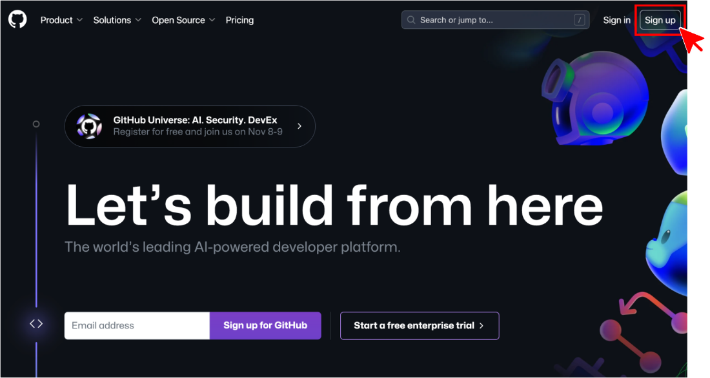
図4.1 - github.comのホームページ
電子メールを入力し、パスワードを選択し、固有のユーザー名を選択します。いくつかの確認ステップを完了すると、確認メールが届きます。送られてきたコードを使って、GitHub アカウントの設定を完了させましょう。
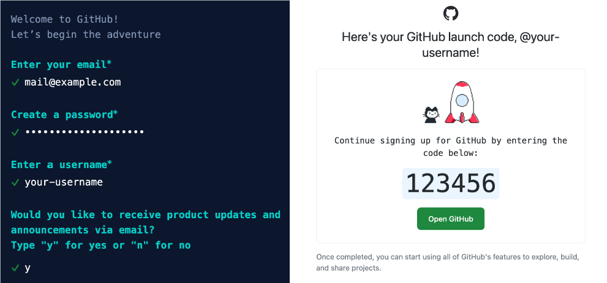
図4.2 github.com の登録ページと確認メール
以上の手順で GitHub アカウントの準備は完了し、最初のリポジトリの作成への道が開けました。
GitHub にログインしたときに表示される新規リポジトリ作成のメニューは、ユーザーのステータスによって異なります。新規ユーザーの場合は直接 Create repository ボタンが表示され、既存ユーザーの場合はリポジトリの一覧の中に New ボタンが表示されます。
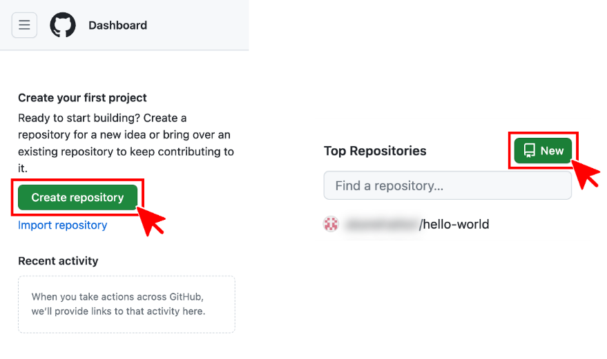
図4.3 - 新規リポジトリ作成ボタン
リポジトリ作成設定画面が表示されます。
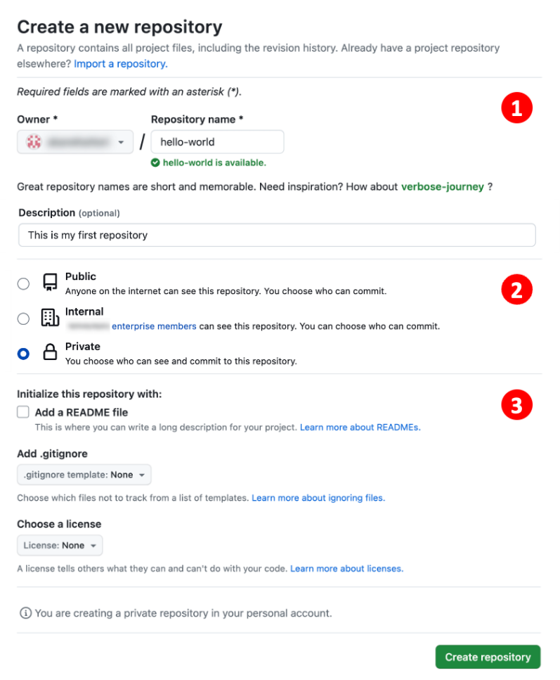
図4.4 - 新規リポジトリの作成
リポジトリの作成には、いくつかの重要な決定事項があります:
- リポジトリの場所**: 所有者（自分自身または自分が所属する組織）を選択し、選択した所有者の下でリポジトリに一意な名前を付けます。
- 可視性: リポジトリを公開するか非公開にするかを決めます。GitHub Enterprise のメンバーなら、内部リポジトリを作成するオプションもあります。公開**リポジトリでは、世界中の誰もがプロジェクトにアクセスでき、共有や共同作業が推奨されるオープンソースコミュニティの一部となります。一方、private リポジトリは、自分だけの秘密にしておきたい作業や、選ばれた個人と共有したい作業のためのものです。GitHub Enterpriseユーザーには、内部リポジトリというオプションがあります。これらは InnerSource に最適です。企業内だけで見ることができるので、セキュアな環境を必要とする共同プロジェクトに最適です。
- 初期化**: README.md、.gitignore、またはLICENSEでリポジトリを初期化することができます。README.md ファイルを含めることは、プロジェクトの歓迎ガイドブックを提供するようなものです。あなたのプロジェクトがオープンソースの場合、最初から正しいライセンスを選ぶことは特に重要です。ライセンスを選ぶことで、他の人があなたのプロジェクトをどのように使ったり貢献したりできるかのルールが決まります。これらのオプションを選択すると、GitHub 内で自動的に git init コマンドが実行されます。既存のプロジェクトを GitHub にプッシュするつもりなら、これらのチェックは外したままにしておきましょう。
この例では、すべての初期化チェックボックスをオフにして空白のリポジトリにします。これで、次のステップでローカルファイルをアップロードするための準備が整いました。リポジトリの詳細を入力したら、リポジトリを作成 ボタンをクリックします。この操作で新しいリポジトリが作成されます。
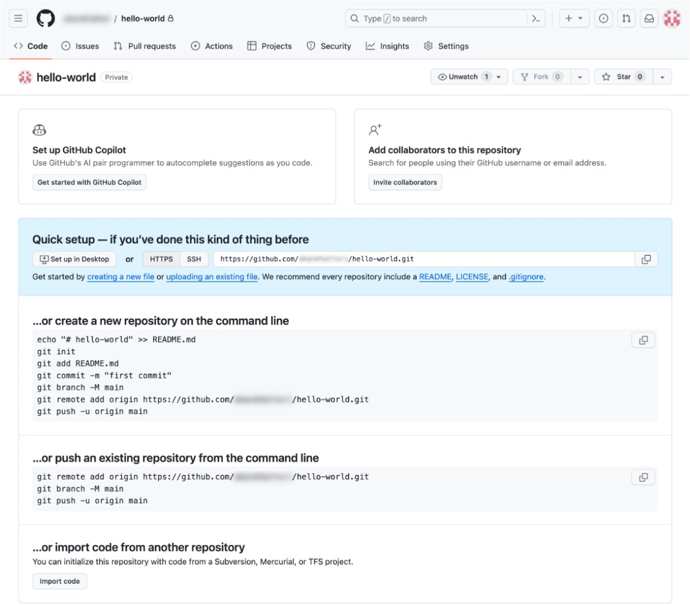
図4.5 - 作成されたリポジトリ
GitHub リポジトリの作成、おめでとうございます！このマイルストーンは、DevOps やオープンソース開発の世界におけるコラボレーションやイノベーション、成長への扉を開くものです。
最後に、ローカルのコミットをリモートリポジトリにプッシュします。このステップでは、ローカルで行った変更をリモートリポジトリに反映させます:
\git$ push -u origin main
git push で -u や –set-upstream を使うと、ローカルリポジトリの現在のブランチのアップストリームを origin main に設定することになります。
このアップストリームを指定することで、リモートリポジトリとの今後のやりとりをシンプルにすることができます。いったんアップストリームを設定すれば、追加のパラメータを指定せずに git push を使用してリモートリポジトリの同じブランチにプッシュすることができます。つまり、それ以降の git push では、あなたのコミットを origin main にプッシュすることが自動的にわかるということです。
それでは、プッシュしたコードが GitHub 上でどのように見えるのかを調べてみましょう。
GitHub リポジトリにアクセスすると、まず最初にリポジトリのメインページが表示されます。ここには、直近に更新されたファイル、README.md ファイル (もしあれば)、リポジトリの詳細が表示されます。このビューでは、プロジェクトの内容と目的を簡単に把握できます。
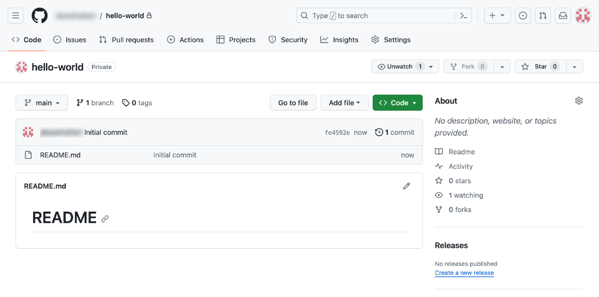
図4.11 - コードをプッシュした後の GitHub リポジトリのページ
GitHub でのコードの編集
重要な機能のひとつは、GitHub 上でコードを直接操作できることです。インターフェイスを使ってファイルを追加したり編集したりすることができ、ちょっとした変更やクイックフィックスに特に便利です。
- 右上の edit ボタンをクリックして編集モードに入ります。
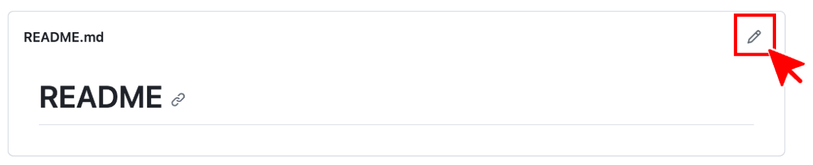
図4.12 - 編集モードに入る
- 編集して変更をコミットすることができます。これはコードベースに直接コミットすることを覚えておいてください:
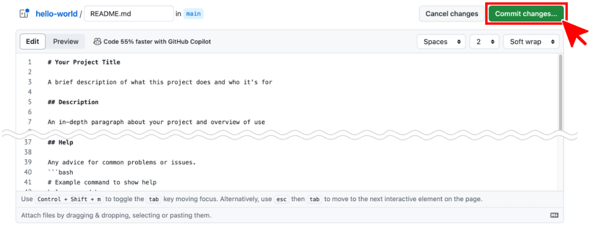
図4.13 GitHub の編集ページ
- このアクションは、変更内容をリモートリポジトリに直接コミットします。しかし、コミット先やブランチを柔軟に選択することもできます。デフォルトは現在作業中のブランチですが、同時に新しいブランチを作成するオプションもあります。新しいブランチを作成した場合でも、後でそれを本流にマージすることができます。
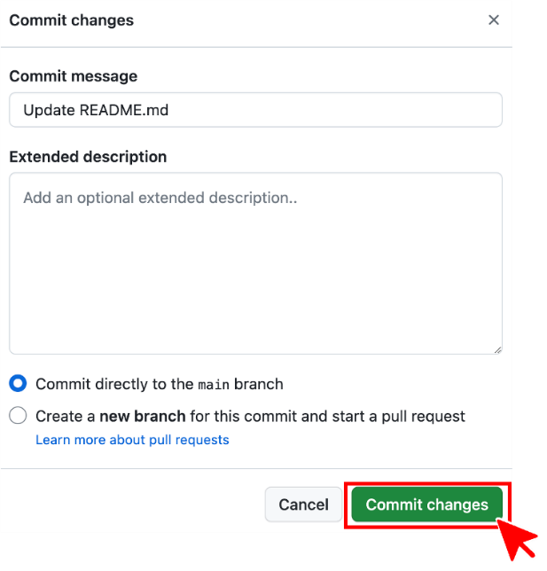
図4.14 - 変更をコミットする
- これで、以下のスクリーンショットのように変更が反映されるはずです。
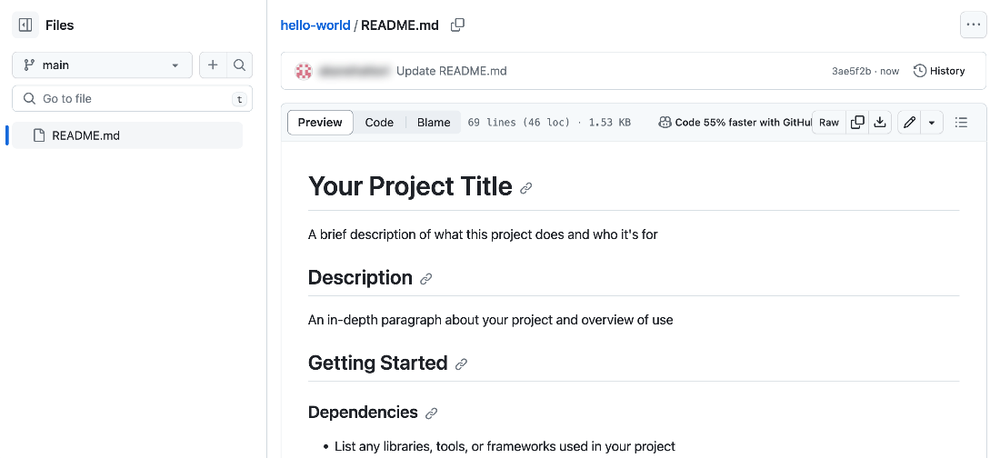
図4.15 - コミット後、コード画面に戻る
GitHub でのコードと変更内容の確認
それでは、先ほど更新したコードを GitHub で見てみましょう。GitHub では、コードをより詳しく見るためにファイルブラウザにいくつかのビューを用意しています。
- プレビュー**モードがデフォルトで、Markdownのような特定のファイル形式で表示されます。
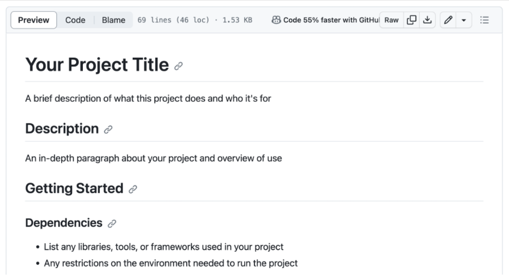
図4.16 - プレビューモード
- Code**モードでは、最新のコミット時のファイルの内容が、美しいシンタックスハイライトとともに表示されます。
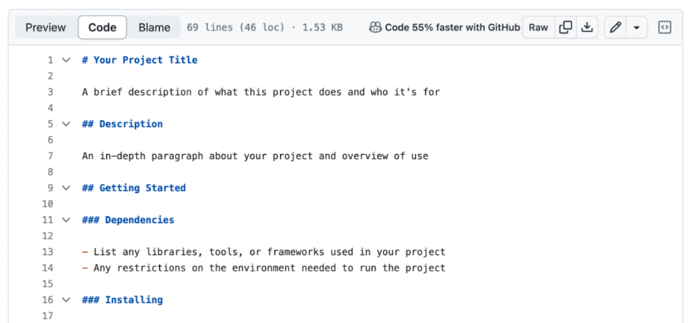
図4.17 - Code モード
- Blame**モードは特に洞察力に富んでおり、ファイルを行ごとに分解し、誰がどのコミットで各行を最後に変更したかを表示します。これはコードの変遷を理解し、変更を追跡する上で非常に貴重です。

図4.18 - Blame モード
これは、ローカルでコードを取得してレビューするのではなく、まず GitHub 上でコードを見てみたいという場合に便利です。GitHub リポジトリのインターフェイスでは、プロジェクトのコミット履歴を調べることができます。この機能を使えば、各コミットの詳細や変更点を調べることができます。
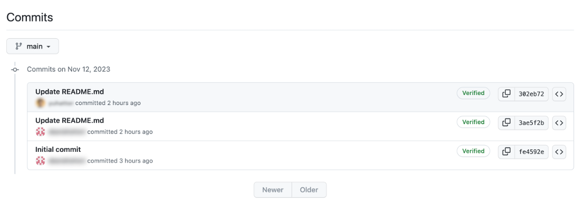
図4.19 GitHub の変更履歴
さらに、GitHub には変更履歴にコメントする機能があり、リポジトリで行われた特定の変更についてのディスカッションやフィードバックを行うことができます。
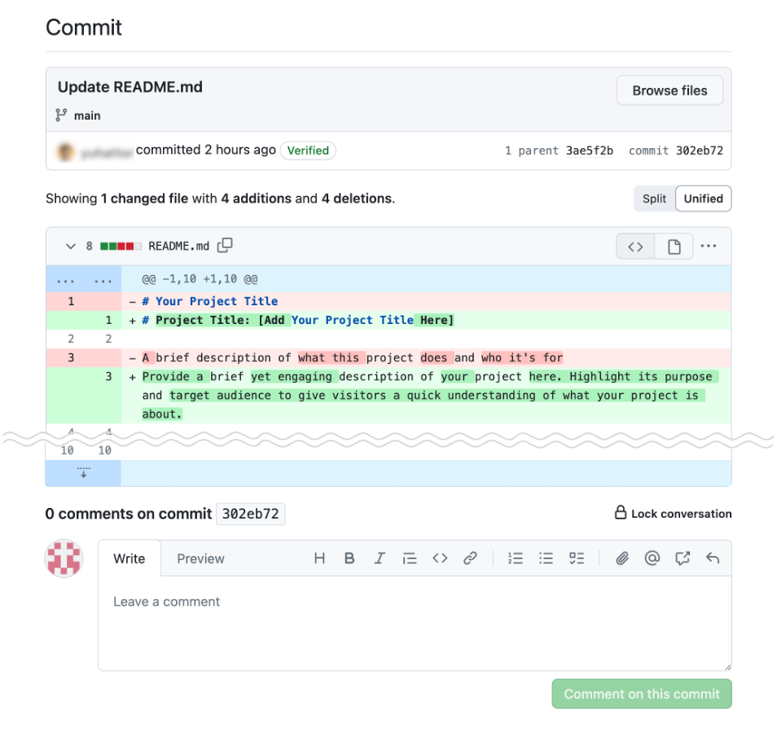
図4.20 GitHub のコミットビュー
GitHub でのブランチの管理
GitHub でのブランチの管理は簡単です。ここでは、GitHub でのブランチ管理の概要を説明します。
まず、リポジトリ内の異なるブランチ間を移動するのは一般的な作業です。GitHub では、リポジトリページの一番上にあるブランチのドロップダウンメニューで簡単にブランチを切り替えることができます。この機能によって、あるブランチから別のブランチへ素早く移動することができ、プロジェクトのさまざまなバージョンや段階を効率的にレビューできるようになります。
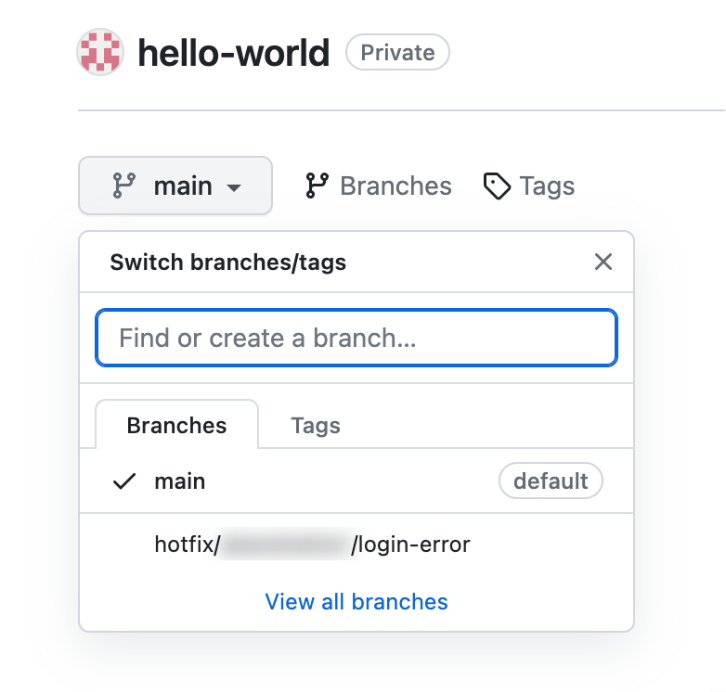
図4.21 - GitHub でのブランチの切り替え
複数のブランチを持つリポジトリでは、特定のブランチを見つけるのが難しくなることがあります。GitHub では、ブランチのドロップダウンメニューに検索機能を用意しています。この機能を使えば、目的のブランチをすばやく絞り込んで見つけることができ、時間を節約してワークフローを改善することができます。
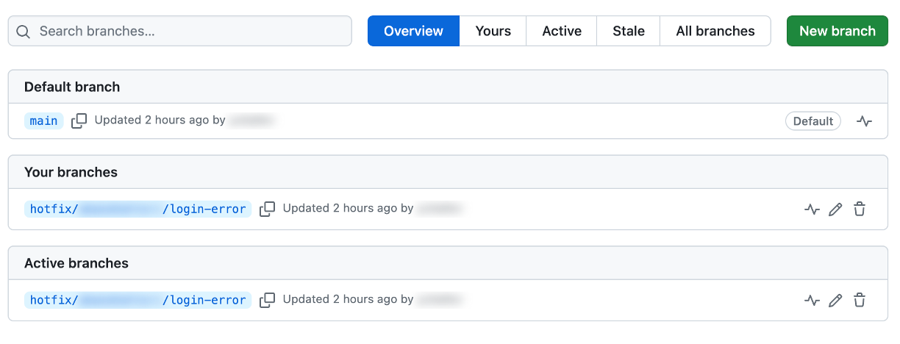
図4.22 - GitHub でのブランチの検索
新しい開発を始める際には、新しいブランチを作成することがよくあります。GitHub では、この新しいブランチを作成する手順を単純化しています。新しいブランチに名前をつけたり既存のブランチをもとにしてみたりすることで、新しい機能や実験のための分岐を簡単に行うことができます。
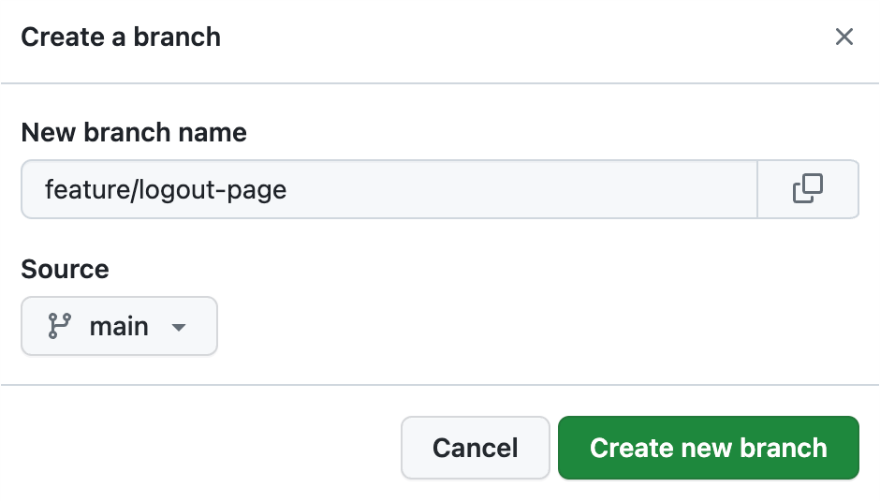
図4.23 - GitHub でのブランチの作成
GitHub のブランチ管理機能は、ひとつのリポジトリ内で複数の開発ラインをシームレスに効率よく扱えるようにするものです。プロジェクトの状態を切り替えたり、特定のブランチを探したり、開発用の新しいブランチを作成したり。GitHub のインターフェイスは、これらの作業を直感的でわかりやすいものにしてくれます。ブランチ管理へのこの合理的なアプローチは、整理された生産的な開発環境を維持するために不可欠です。
クローンやダウンロードといえば、どのリポジトリでもこれらのオプションがすぐに利用できます。リポジトリページに行って < ￤ Code ボタンを押すと、これらのオプションがあることがわかります。クローンを作成すると、あなたのマシンにリポジトリのローカルコピーが作成され、オフラインでプロジェクトを作業することができます。
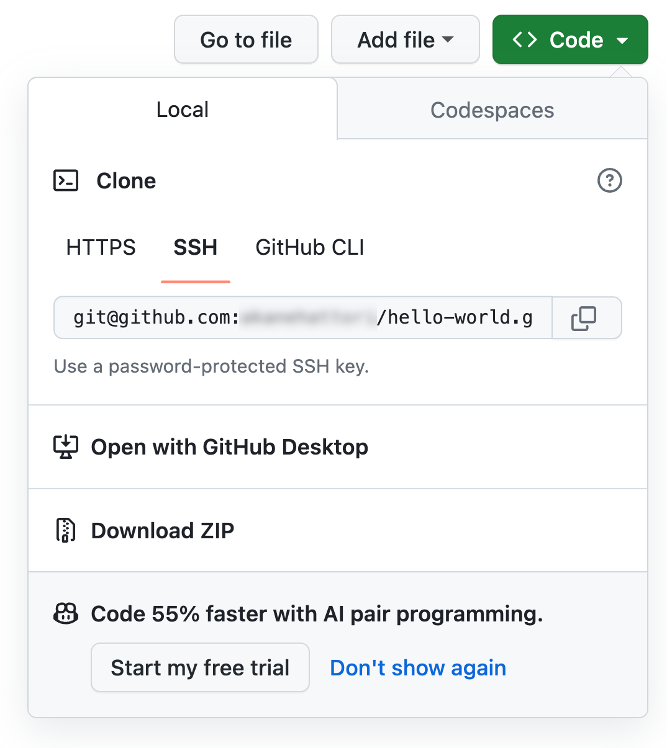
図4.21 git clone
git clone コマンドを実行するのは簡単で、GitHub のようなプラットフォームでホストされているプロジェクトに関わりたい人なら誰でも簡単にアクセスできます。リポジトリをクローンするには、クローンしたいリポジトリの URL が必要です。
\git clone ￤【あなたの SSH URL
git clone は、既存のリポジトリの正確なローカルコピーを作成できる中核的なコマンドです。このプロセスでは、現在のファイルを複製するだけではなく、リポジトリ全体を複製します。これには、すべてのファイルのバージョン、完全なコミット履歴、すべてのブランチが含まれます。git clone を使うことで、プロジェクトの完全かつ機能的なバージョンをローカルマシンに取り込むことができます。これにより、オフラインで作業できるだけでなく、プロジェクトの開発履歴を包括的に見ることができるようになります。
git clone に加えて、GitHub でリポジトリを複製する方法があります。これは、特にオープンソース開発に便利です。Git、特にGitHubのようなプラットフォームにおけるフォークの概念は、共同開発やオープンソース開発の要です。リポジトリをフォークするということは、他人のプロジェクトの自分だけのコピーを自分のアカウントで作るということです:
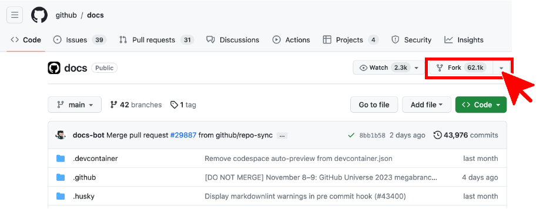
図4.22 - GitHub でのフォーク
リポジトリをフォークするということは、要するに元のプロジェクトと自分の創作空間の橋渡しをするということです。このコピーは GitHub アカウントに置かれ、最初は元のリポジトリをミラーしていますが独立したものです。あなたが行う修正、追加、実験は、あなたのフォークに限定されます。
フォークは、オープンソースの世界では特に重要です。開発者がフォークで変更を加え、その変更をプルリクエストと呼ばれるプロセスを通じて元のプロジェクトに提案することで、プロジェクトに貢献できるようになります。このようにして、ソースリポジトリに直接書き込むことなくプロジェクトに貢献することができるのです。フォークすると、図のように新しい環境にコピーが作成されます。
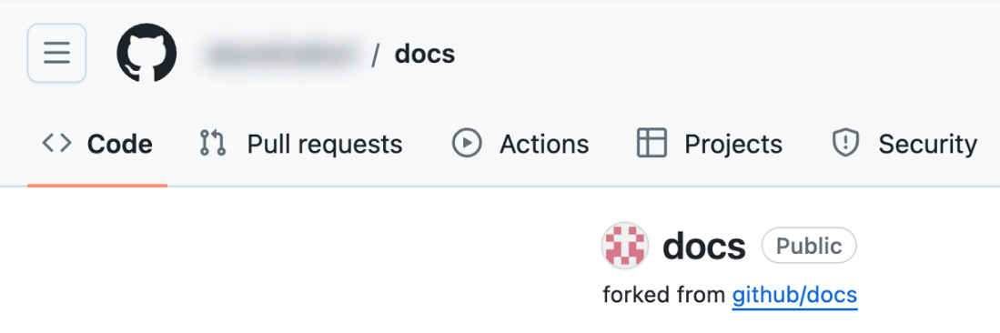
図4.23 - フォークされたリポジトリはあなたの環境で管理される
フォークは、元のプロジェクトのメンテナとの関係や信頼度に関係なく、誰でも自由に実験や貢献ができるユニークなプラットフォームを提供します。このアプローチは、共同コーディングへの参入障壁を大幅に下げます。
リポジトリをフォークすることで、上流のリポジトリに影響を与えることなく、自分のアイデアや拡張、修正をプロジェクトに追加できる環境を作ることができます。これは、メインリポジトリに直接アクセスするためのプロジェクトメンテナからの信頼をまだ得ていないような新しい貢献者にとって、特に大きな力となります。フォークによって、彼らは自分の能力と貢献を、独立した個人的なスペースで示すことができる。
フォークのこの独立しつつもつながりのある性質は非常に重要である。第一に、自分のフォークで自由に実験や変更を行い、第二に、プルリクエストを通じて、これらの変更を元のプロジェクトにマージするよう提案する。このワークフローは、アイデアや貢献が自由に交換され、最高のものがプロジェクトにシームレスに統合される、オープンなコラボレーションの文化を育む。
要するに、フォークとは単にリポジトリをコピーすることではなく、より大きなコミュニティに参加することなのだ。既存のプロジェクトに貢献するにしても、他の人の作業をもとに新しいプロジェクトを立ち上げるにしても、あるいは単に実験するにしても、フォークすることはGitやGitHubを使う上で欠かせないことです。
Git コマンドの基本を学び、個人でもリモート環境での共同作業でも Git リポジトリを管理する方法を学びました。次は、GitHubでのコミュニケーションに欠かせないツールであるGitHub Issuesとプルリクエストsに飛び込んでみましょう。これらの機能は一見簡単そうに見えますが、オープンソースプロジェクトの成功において重要な役割を果たしています。アイデアの創出、ディスカッション、レビューのプラットフォームとして機能し、共同開発やイノベーションの文化を育みます。これから、これらの機能がどのようにコミュニケーションとコラボレーションを強化し、GitHub での開発に貢献しているかを探っていきます。
GitHub Issuesは、GitHubエコシステム内の多面的なツールとして、共同作業の編成に欠かせない存在です。単に問題を報告する場所としてだけでなく、プロジェクトに関連する様々な種類のタスクや活動を追跡するための包括的なシステムとして機能します。これには、バグ管理、機能強化の提案、GitHubリポジトリ内のその他の重要なタスクのモニタリングが含まれます。
DevOps環境では、GitHub Issuesは継続的なフィードバックとシームレスなコラボレーションを促進することで重要な役割を果たします。開発者がイシューにフラグを立てたり、チームメンバーが新機能を提案したり、関係者が機能強化の可能性について有意義な議論をしたりできる、透明で効率的なプラットフォームとして機能します。この機能は、組織の壁を取り払い、オープンなコミュニケーションを促進し、継続的な改善と適応の文化を育むことを重視するDevOpsの基本原則と完全に調和しています。
GitHub Issuesを活用することで、チームは、コラボレーションを促進し、プロジェクトに関わる全員が同じ見解を持つことを保証する、共有されたアクセス可能なスペースを作ることができます。GitHub Issuesを活用することで、チームはコラボレーションを促進し、プロジェクトに関わる全員が同じ見解を持つことができる共有スペースを作ることができます。
透明性を促進し、開発者の体験を向上させるGitHub Issuesのユニークな役割
GitHub Issuesは、特に透明性とコラボレーションへのアプローチにおいて、ソフトウェア開発業界においてユニークなツールです。GitHubに不可欠なこのツールは、開発チーム、そしてより広範なオープンソースコミュニティの、プロジェクトにおけるコミュニケーションとコラボレーションのあり方を再定義しました。GitHubのIssuesの重要性は、バグ追跡や機能要求ツールとしての機能性だけでなく、オープンソース運動の理念を反映した、オープンで透明性の高い、コミュニティ主導のソフトウェア開発アプローチを育成する役割にある。
開発における透明性の重要性
ソフトウェア開発における透明性とは、ソフトウェアの作成、変更、保守のプロセス全体を、開発者からエンドユーザーに至るまで、関係するすべてのステークホルダーに可視化し、理解できるようにすることである。この透明性はいくつかの理由から非常に重要です:
- コラボレーションの向上**: プロジェクトのすべての側面が可視化されると、チーム メンバーはより効果的にコラボレーションできます。全員が同じ情報にアクセスできるため、より良い意思決定が可能になり、目標やイシューに対する理解が共有されます。
- 説明責任の向上: 透明性は、責任の明確な割り当てにつながります。チームメンバーは、自分の仕事が他のメンバーに見えることで、自分の仕事に対してより責任を持つようになり、オーナーシップとコミットメントの意識が育まれます。
- 品質と革新性の向上: プロジェクトデータへのオープンアクセスにより、プロジェクトをより多くの人が見ることができ、より多くのフィードバック、アイデア、批評が得られます。この集団的な精査は、品質を高めるだけでなく、イノベーションにも拍車をかけます。
- 信頼構築: 透明性は、チームメンバー間およびユーザーや顧客を含む外部の利害関係者との信頼を築きます。信頼は、長期的なプロジェクトの成功や、信頼性が高くユーザー重視のソフトウェアを確立するために極めて重要です。
GitHub Issues: 透明なコラボレーションの触媒
GitHub Issuesは、この透明性の高いアプローチを例証しています。詳細で階層的なパーミッションを許可するツールとは異なり、GitHub Issuesは通常、よりオープンなアクセスモデルで運営されています。すべてのイシュー、ディスカッションスレッド、決定事項はチームメンバー全員に公開され、オープンソースプロジェクトでは一般公開されることもあります。このオープン性は情報のサイロ化を防ぎ、組織やコミュニティ内のどのレベルからでもアイデアやフィードバックが得られるボトムアップの文化を促進します。
このアプローチは、コミュニティへの貢献、責任の共有、オープンな対話を重視するオープンソース開発の理念とシームレスに一致する。同様のモデルを社内で採用することで、企業はこのオープンソースアプローチのメリットを享受し、組織の縦割りを打破し、チーム内にコミュニティのような雰囲気を醸成することができる。これは、開発者がイニシアチブを取り、アイデアを提供し、健全で建設的な議論に参加することを奨励するものである。
社内コラボレーションのモデルとしてのオープンソース
GitHub Issuesのようなツールによって促進されるオープンソースの仕事のやり方は、開発者の経験を向上させるための優れた戦略です。オープンソースコミュニティの協調的で透明な性質を、組織の内部作業に取り入れるのだ。開発者は、自分たちの仕事がどのような影響を及ぼしているのかがわかり、自分の仕事を超えた議論に貢献することで、より積極的に仕事に取り組み、評価されていると感じる。このようなオープンな環境は、コミュニティ意識を育み、士気を向上させ、イノベーションと生産性を大幅に高めることができる。
さらに、GitHub Issuesとオープンソースモデルが育む透明性と開放性は、かけがえのない学習の機会を提供します。開発者は互いに学び合い、異なる視点から洞察を得、様々なイシューや解決策に触れることで成長することができます。このような環境は、人材の確保やチームのモチベーションと生産性の維持に欠かせない、個人的かつ専門的な成長を促します。
GitHub Issuesはコラボレーションの触媒です
要約すると、GitHub Issuesはソフトウェア開発の透明性とコミュニティ主導のアプローチを促進する上で極めて重要な役割を果たしています。オープンソースのプラクティスからインスピレーションを得ることで、組織の壁を取り払い、協力的で透明性の高いワークカルチャーを育み、開発者のエクスペリエンスを大幅に向上させます。ソフトウェア開発がますますコミュニティとコラボレーションを重視する時代において、GitHub Issuesはよりオープンで包括的、そして効果的な働き方へとチームを導く道標となっています。
そんな観点から Issue を見てみましょう。
GitHub での初めてのイシュー作成は、そのシンプルさゆえに最初は難しく感じるかもしれません。しかし、このスキルをマスターすることは、効果的な共同作業を行う上で非常に重要です。うまく構成されたイシューが鍵となります。明確で簡潔、そして実用的でなければなりません。ゴールは、共同作業者に過剰な情報を与えることなく、あなたの主張を理解させるのに十分な文脈を提供することです。イシューを明確に特定し、その重要性を説明し、望ましい結果を概説することから始めましょう。
このプロセスは、GitHub リポジトリから始めます。既存のリポジトリがある場合や作成したばかりの場合は、リポジトリメニューに Issues タブがあります。ここで新しいイシューを作成します。
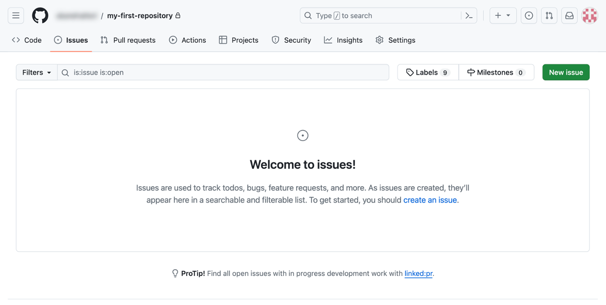
図4.24 - 新しいイシュー
イシューの作成は簡単です。インターフェイスには、タイトルと主な説明のフィールド、および担当者やラベルなどのメタデータオプションが表示されます。注目すべきはイシューの内容です。GitHub はドキュメントのフォーマットに Markdown をサポートしているので、Markdown の構文に慣れておくとよいでしょう。しかし、シンプルであることが重要であることを覚えておいてください。MarkdownはMicrosoft Wordほど機能が豊富ではありませんが、クリーンでわかりやすいドキュメントを作るには最適です。
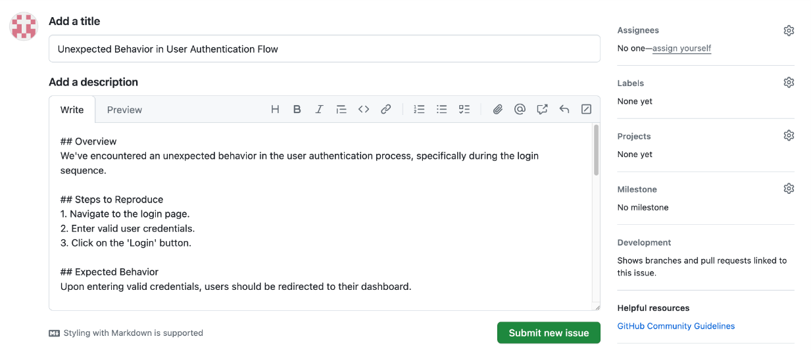
図4.25 GitHub でのイシューの作成
イシューの中でチームメンバーに割り当てたり、通知の内容で個人やチームに直接言及したりすることもできます。
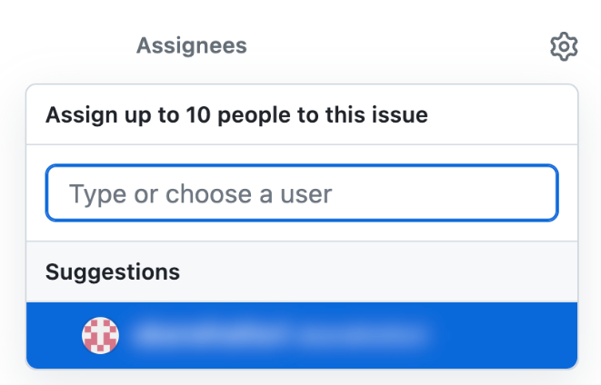
図4.26 - イシューを他のユーザーに割り当てる
タスクにラベルを付けることもできます (例: バグ、ドキュメント、改善)。カスタムラベルを作成することもできますが、デフォルトのラベルから始めて徐々に強化していくことをお勧めします。ラベルを使いすぎると、混乱や分類の難しさにつながります。チームや組織で特定のラベル基準を設けている場合は、それを守るのが一番です。
GitHubのissueの使い方はトップダウン式ではなく、コミュニティ主導のボトムアップ式を推奨しています。最初から厳格なルールを課してしまうと、オープンでアジャイルで協力的な文化を育むために必要な自由が制限されてしまいます。バランスが重要です。あなたやあなたのチームが GitHub のワークフローに慣れてきたら、それに応じてアプローチを調整すればいいのです。
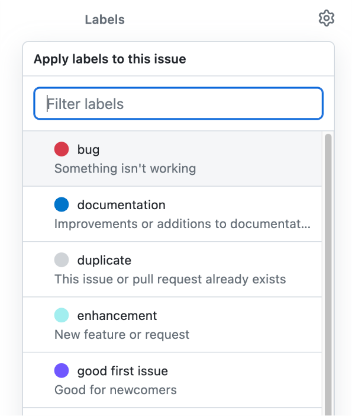
図4.27 - さまざまな種類のラベルを適用できる
最後に、投稿されたイシューが表示されます。
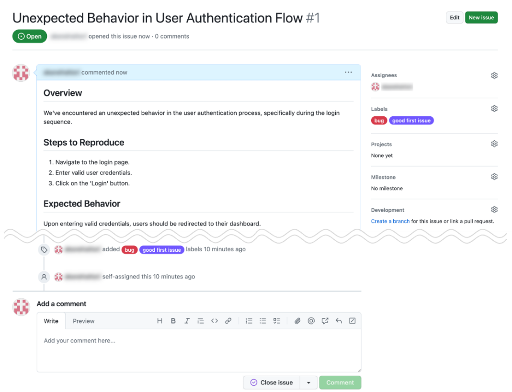
図4.28 - イシューの提出後
このように、GitHub でのイシュー管理は簡単です。重要なのは、コラボレーションとコミュニケーションを促進することです。次のセクションでは、効果的なコミュニケーションのテクニックを掘り下げ、GitHub を使って組織内のコラボレーションを強化する方法を探ります。
さて、優れたイシューを作るにはいくつかのポイントがあります。タイトル、説明文の書き方、そして返信の基本的な方法です。それらは当たり前のことのように思えるかもしれないが、多忙な業務の中では、しばしば気に留めることなくミスコミュニケーションを引き起こしてしまうことがある。素晴らしいコミュニケーションを求めるなら、このセクションが役に立つだろう。
効果的なタイトルのつけ方 わかりやすさとインパクトを与える主要原則
イシューのタイトルは、協力者が最初に目にするものであり、注目を集め、イシューの本質を伝えるために極めて重要です。簡潔かつ説明的なタイトルを目指しましょう。問題*」や「*機能リクエスト*」のような漠然としたタイトルは避け、具体的にしましょう。例えば、"*Fix Broken Link in README*"の方がはるかに有益です。しかし、なぜ明確さが重要なのでしょうか？
組織内で働く場合、あなたはしばしば複数のリポジトリに属し、それぞれに未解決の問題が多数含まれている可能性がある。これらの問題を効果的に管理し、注目を集めるためには、タイトルが重要な役割を果たす。魅力的でありながら正確で、明確でありながら誇張されてはならない。
以下は、真実味とわかりやすさを保ちながら、イシューのタイトルを際立たせるためのガイドラインです:
- 簡潔かつ明確な説明**: タイトルは簡潔でありながら説明的であるようにし、専門用語は避け、わかりやすい言葉を使う。このように明確にすることで、チームメンバーが問題をすばやく理解できるようになります。
- カテゴリーキーワードで始める: 問題の本質をすぐに伝えるために、「修正」、「強化」、「最適化」などの言葉で始めます。
- 中核となる問題を要約する**: タイトルは、余計な詳細は省き、主な問題や要望を簡潔にとらえること。
- 中立的かつ具体的に**: 誰が報告したか、誰が解決するかではなく、問題に焦点を当てます。該当する場合は、よりよく分類するために、影響を受けた特定のコンポーネントまたは機能を含めます。
- 優先度よりも明確さ: 緊急性や重大性を示すためにタイトルを使用することは避けてください。代わりに、ラベルまたは問題の内容をこの目的に使用し、タイトルが曖昧さを残さず、焦点を絞ったものになるようにします。
もちろん例外もありますし、これらのガイドラインはプロジェクトごとにカスタマイズする必要がありますが、GitHub のイシューに効果的なタイトルをつけることで、イシューを素早く分類して特定することでトリアージをスピードアップし、発見しやすさを向上させてイシューの所在を簡単に特定し、チーム全体で明確なコミュニケーションを促進し、誰もが一目でイシューを理解できるようにします。この合理的なアプローチは、効率的なリポジトリ管理の鍵となります。
説明におけるコンテキストの提供: 明確で簡潔なコミュニケーションのための戦略
効果的なイシュー説明は、DevOpsにおける協調的な問題解決の礎石です。説得力のある明確なイシュー説明を作成するには、まず現在のシナリオを概説します。これにより、理解のための段階が整う。次に、問題またはあなたが提案している機能強化を簡潔に述べる。最後に、望ましい結果や解決策を明示する。この理路整然としたアプローチにより、理解と建設的な対話の方向性の両方が保証される。
問題の説明において、文脈は極めて重要です。あなたの視点や、問題が発生した状況、機能の必要性が生じた状況をチームメイトに理解してもらうためです。可能であれば、問題を再現できるステップを含めてください。これは単に問題を説明するだけでなく、共同作業者をあなたの経験に引き込み、問題を効果的に測定できるようにするためです。
また、Markdownを活用することで、問題の読みやすさとエンゲージメントを高めることができます。このシンプルなマークアップ言語では、ヘッダーでイシューを構造化し、箇条書きリストや番号付きリストでポイントを整理し、コードブロックやシンタックスハイライトを使ってコードスニペットを含めることができます。これらの要素は、あなたのイシューをナビゲートしやすくするだけでなく、より魅力的で取り組みやすくします。
以下は、イシューの説明が明確かつ簡潔で、取り組んでいる問題や改善点を効果的に伝えるためのガイドラインです:
- 文脈と明確さ**: 現状の背景を明確にすることから始め、具体的な言葉で問題や改善点を定義します。これにより、問題を理解するための段階が整います。
- 成果と再現ステップ**: 解決に望まれる結果を記述し、バグを報告する場合は、それを再現するための詳細なステップを提供する。このように明確にすることで、他の人が解決策をイメージしやすくなり、問題の範囲を理解しやすくなります。
- 美しいマークダウンと絵文字**: MarkdownとEmojiを使用して説明を構造化し、ヘッダー、リスト、コードブロックで読みやすくしましょう。
- ビジュアルエイドとソリューション: 追加のコンテキストのためにスクリーンショットやリンクを含める。潜在的な解決策や回避策を提案することも、問題解決プロセスの開始に役立ちます。
- 焦点と協力**: 関連性のない話題は避け、問題に焦点を当てた説明を心がけましょう。フィードバックを奨励し、提案を受け入れ、問題解決への協力的なアプローチを促進する。
良い問題説明は、問題の明確な理解を提供することで理解を向上させ、*迅速な評価と解決を可能にすることで効率的な問題解決を促進し、*建設的なフィードバックと共同での解決策の発見を促すことで共同作業を強化する。この簡潔なアプローチは、プロジェクトの進行とチームワークを効率化します。
共同文化のためのイシュー返信
GitHub のイシューは、単にバグを追跡するだけのツールではありません。イシューに返信するということは、単に特定の問題や問い合わせに対応するだけでなく、プロジェクトの受動的なドキュメント作成にも貢献することになります。
イシューへの返信は簡単です。マークダウンで返事を書いて返信するだけです。しかし、ここでも哲学が必要です。
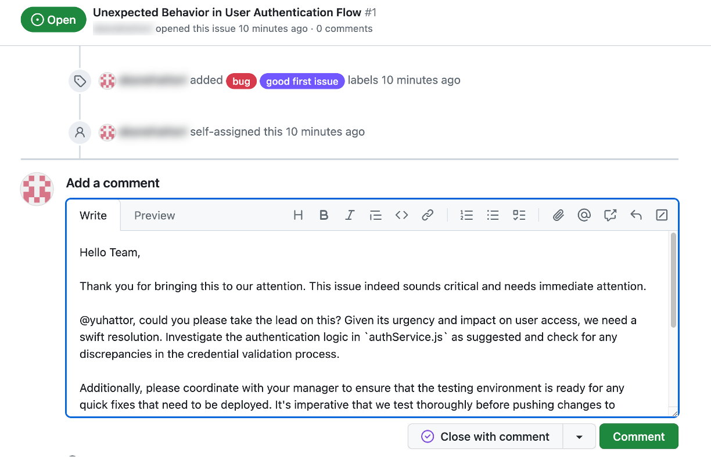
図4.29 - イシューへのコメント
GitHub では、メールでの返信だけでなくイシューへのコメントも本当に重要です。次のような観点から見てみましょう:
- 受動的ドキュメント**: 受動的なドキュメンテーションとは、InnerSourceの文脈から生まれた概念であり、ドキュメンテーションは能動的に作成されるのではなく、リポジトリ内での相互作用を通じて自然に発展していくものです。GitHubでは、すべてのイシュー、プルリクエスト、ディスカッションスレッドが、この受動的ドキュメントの一部となります。このプロセスは有機的でボトムアップ的です。チームメンバーが会話に参加し、機能を要求し、問題を解決し、解決策を実装すると、そのやりとりが記録されます。これにより、決定、議論、変更の包括的で発展的な記録が作成され、プロジェクトの歴史と根拠をとらえた生きたドキュメントに貢献する。
- 透明性のためのコミュニケーションの一元化: 共同作業環境では、Slack、Teams、Jira、GitHubなど、さまざまなチャンネルを通じてコミュニケーションが行われることが多い。しかし、プロジェクト関連のディスカッションを GitHub に一元化することには大きなメリットがあります。価値あるドキュメントを作成するだけでなく、透明性のある文化を育むことができる。すべての意思決定プロセスやコラボレーションが可視化され、チームメンバー全員がアクセスできるため、包括性と理解が促進される。Slack のような他のプラットフォームで会話が発生しても、その議論を GitHub に誘導することで、重要な情報や決定が文書化され、チーム全体で共有されます。このアプローチはサイロ化を防ぎ、プロジェクトにいつ参加したかにかかわらず、全員が同じ情報にアクセスできるようにします。
- 積極的で包括的なコミュニケーションを受け入れる: 効果的なコラボレーションは、前向きで包括的なコミュニケーションに根ざしています。問題に返信するときは、良い行動を認めて褒め、チームメンバーの貢献に感謝し、敬意と協力的なトーンを維持することが重要です。これは健全なチームの活力を促すだけでなく、士気を高め、帰属意識と感謝の気持ちを育みます。インクルーシブなコミュニケーションとは、すべての人の声が届き、評価され、その貢献が認められるようにすることです。このアプローチは、チームの結束を強めるだけでなく、より良い問題解決とイノベーションを促進する。
GitHubでは、イシューへの返信は単なるレスポンスではなく、受動的なドキュメントを構築し、チームの透明性を育み、積極的で包括的なコミュニケーションを促進するための不可欠な要素です。イシューへの返信を生きたドキュメントへの貢献として扱うことで、私たちはプロジェクトの進化の豊かな歴史を作り上げます。コミュニケーションをGitHubに一元化することで、チームメンバー全員が平等に情報にアクセスできるようになり、透明性のある意思決定に役立ちます。最後に、積極的なコミュニケーションスタイルを採用することで、チームの絆を強め、全員が評価され、話を聞いてもらっていると感じることができます。このような全体的なアプローチによる問題解決は、問題解決だけでなく、強く、包括的で、透明性のあるチーム文化の構築にもつながります。
さて、次のセクションでは GitHub プルリクエストs を見てみましょう。これは GitHub Issues とよく似たインターフェイスを持っていますが、主な違いはコメントに加えて実装も含まれることです。
それでは、エンジニアリング・コラボレーションの核心に迫っていきましょう。
GitHubのプルリクエスト機能は、ソフトウェア開発における極めて重要な革新であり、オープンソースソフトウェアのムーブメントを大きく形成したと言えるでしょう。その導入は、ソフトウェアプロジェクト、特にオープンソースソフトウェアにおけるコラボレーション、コード統合、品質保証のあり方を再定義し、変革をもたらしました。
GitHubのプルリクエストは単なる機能ではなく、ソフトウェア開発の世界におけるコラボレーションの基礎となるメカニズムです。プルリクエスト (PR) とは、基本的にはリポジトリのあるブランチから別のブランチへ、通常は機能ブランチやトピックブランチからメインブランチやマスターブランチへ、一連の変更をマージするリクエストのことです。しかし、PR の意義は単なるコードのマージにとどまりません。PR は、共同プロジェクトにおけるコードの議論、レビュー、改良のための結節点なのです。
プルリクエストモデルは、共同コーディングを一変させました。それは、孤立して送られる個々のコードパッチから、よりインタラクティブでコミュニティ主導のアプローチへとフォーカスを移しました。開発者は変更を投稿するだけでなく、GitHubプラットフォーム内で直接その変更についての議論に参加することができるようになりました。これにより、共同レビューと継続的なフィードバックの文化が育まれ、高いコード品質を維持し、プロジェクトの目標に沿った貢献をするために不可欠なものとなりました。プルリクエストは、コードレビューのための構造化された透明な方法を導入しました。コード変更は、プルリクエストのコンテキスト内で簡単に可視化され、議論できるようになり、より詳細で生産的なフィードバックが可能になりました。このプロセスは、変更が徹底的に吟味されることを保証し、より高いコード品質とより堅牢なソフトウェアプロジェクトにつながります。
プルリクエストは、コードのレビューとマージ方法に革命をもたらしただけでなく、GitHubにおける開発ワークフローを大幅に合理化しました。GitHubのネイティブ機能や多数のサードパーティツールとシームレスに統合することで、継続的インテグレーション（CI）や継続的デプロイ（CD）のプラクティスをサポートし、強化します。この統合は開発プロセスを変革し、より効率的で信頼性が高く、自動化されたものにする。
プルリクエストの使用における魅力的な発展は、プルリクエストスレッド自体にプレリリーステストを統合したことである。この進歩は、コード品質とプロジェクト管理を保証するための、より包括的でまとまったアプローチにつながった。開発者が プルリクエスト を開始するたびに、一連の自動チェックとテストが開始されます。これらは、コード品質評価やセキュリティ脆弱性スキャンからパフォーマンステストまで多岐にわたる。これらのテスト結果は プルリクエスト に直接表示され、即座に実行可能なフィードバックを提供します。
コマンドラインを超えて
GitHubのプルリクエストの歴史的な背景や進化について語るとき、プルリクエストという言葉自体がGitのgit request-pullコマンドにルーツがあることに注目することが重要です。この関係から、GitHubの貢献はまったく新しいものを発明したというよりも、既存の概念にユーザーインターフェイスを提供したことにあると考える人もいるかもしれません。しかし、GitHubのプル・リクエストの歴史と発展を深く探ると、もっと重要な影響があることがわかります。
GitHubは、基本的なコマンドライン機能をウェブインターフェイスの中で、リッチでインタラクティブなコラボレーション機能へと変貌させたのだ。この変革は、単にユーザーインターフェイスレイヤーを追加しただけでなく、コード変更をめぐるコラボレーションのあり方を再構築するものだった。
まず、GitHub でリポジトリを作成します。このデモでは、コマンドラインインターフェイスではなく GitHub の UI に焦点を当てます。README.md ファイルしかないリポジトリを出発点と考えましょう。このファイルに詳細な内容を追加し、プルリクエストを提出してマージするのが目標です。
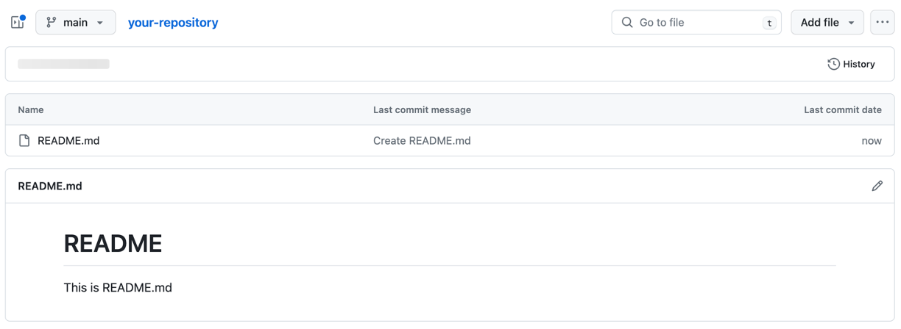
図4.30 - リポジトリのページ
最初のステップでは、adding-details-to-readme という名前のブランチを作成します。このブランチで編集を行い、メインブランチにマージします。Git コマンドを使用して新しいブランチを作成したりプッシュしたりすることもできますが、GitHub にはこのための直感的なインターフェイスも用意されています。左上のブランチドロップダウンボタンを使って、メインブランチから派生したブランチを作成します。
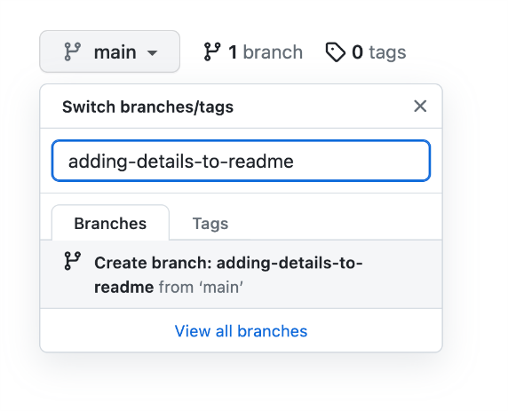
図4.31 - ドロップダウンメニューによる新しいブランチの作成
ブランチが作成されると、メインブランチやマスターブランチだけでなく、どのブランチに対しても変更を加えることができるようになります。
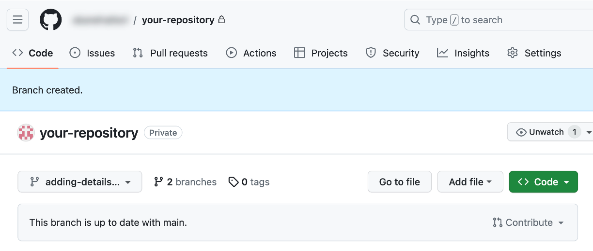
図4.32 - ブランチ作成の通知
それでは README.md を編集しましょう。編集を始める前に、左上のドロップダウンメニューで正しいブランチであることを確認してください。そして、右上の編集ボタンを使って README ファイルの編集を始めます:
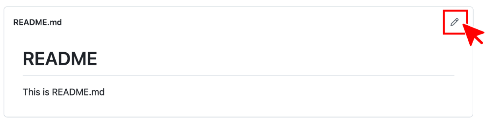
図4.33 - 編集ボタンをクリックする
README.md ファイルはリポジトリの顔であり、入り口であり、チームメンバーや新しい貢献者を歓迎します。ここであなたの想像力を膨らませ、魅力的な README を作りましょう:
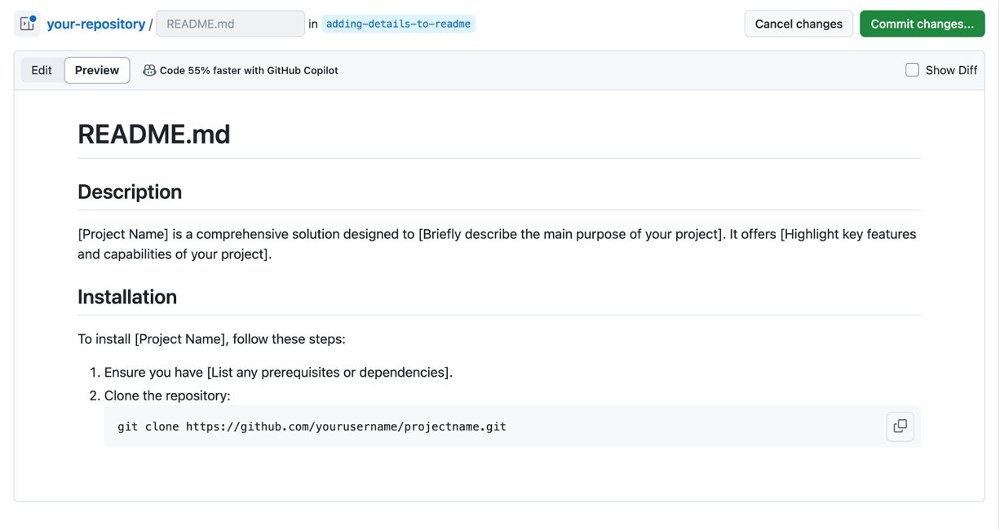
図4.34 - Readme.mdファイルを編集する
さて、これで準備は整いました。コミットを反映させましょう。すでに編集用のブランチに入っているので、編集した内容をそのままコミットしてもかまいません。しかし、メインブランチにいる状態で編集ウィンドウを開いてコミットすると、新しいブランチを作成するオプションが残ってしまいます。しかし、最初は意識的にブランチを作ってコミットしたほうが安全です。一方、GitHub にはブランチ保護ポリシーの設定があり、main、production、release といったチームの共有環境に直接コミットすることはできません。このことは、この章の後で説明します。
タイトルが Git のコミットメッセージになるので、これまでの章を読みながらよく考えてコミットしましょう。
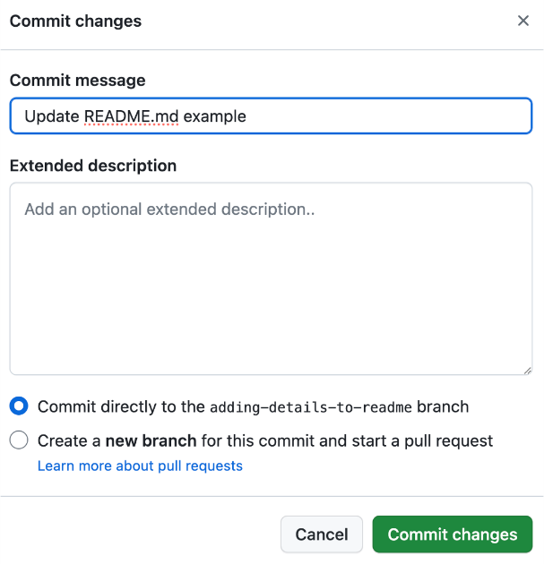
図4.35 変更のコミット
変更がコミットされると、リポジトリのトップページにプルリクエストを作成するためのアラートが表示されるでしょう。アラートが表示されなかったり、別のブランチを選択したい場合は、New プルリクエスト ボタンからプルリクエストを作成することもできます。
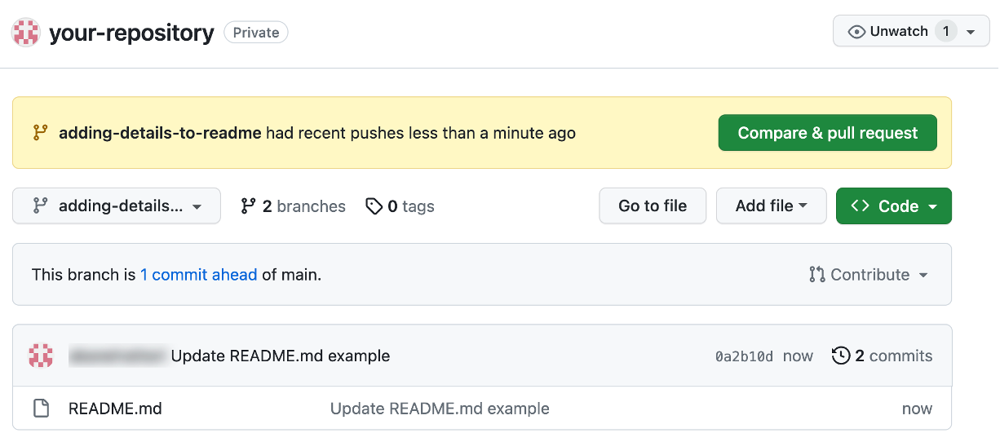
図4.36 - プルリクエストのアラート
このアラートが表示されなかったり、別のブランチを選択したい場合は、プルリクエストs タブの下にある New プルリクエスト ボタンをクリックして、同じプロセスを開始できます。
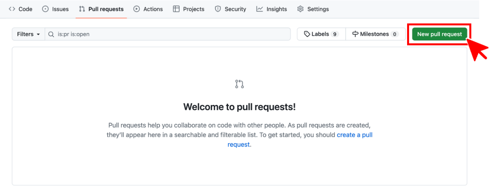図4.37 - 新規プルリクエストボタンをクリックする
インターフェイスをナビゲートしていると、アラートに従って、あるいはNew プルリクエストボタンをクリックして、プルリクエストページにたどり着くかもしれません。どのような方法でたどり着いたにせよ、ここは自分の変更履歴を確認する場所です。
GitHub での変更の表示方法はさまざまです。図に示すように、差分 (diff) はインラインで表示され、コードの各行に散りばめられています。また、GitHub では差分を並べて表示するスプリットビューもあります。このように分割して表示することで、元のコードと変更後のコードをより明確に比較することができます。

図4.38 - 変更点のレビュー画面
満足したら、PRを書きましょう。よいPRには、明確なタイトル、詳細な説明、指定されたレビュアーが含まれます。レビュアーについては、個人またはチームを指定できます。ここでの内容は、Issueに書く内容と多少似ています。
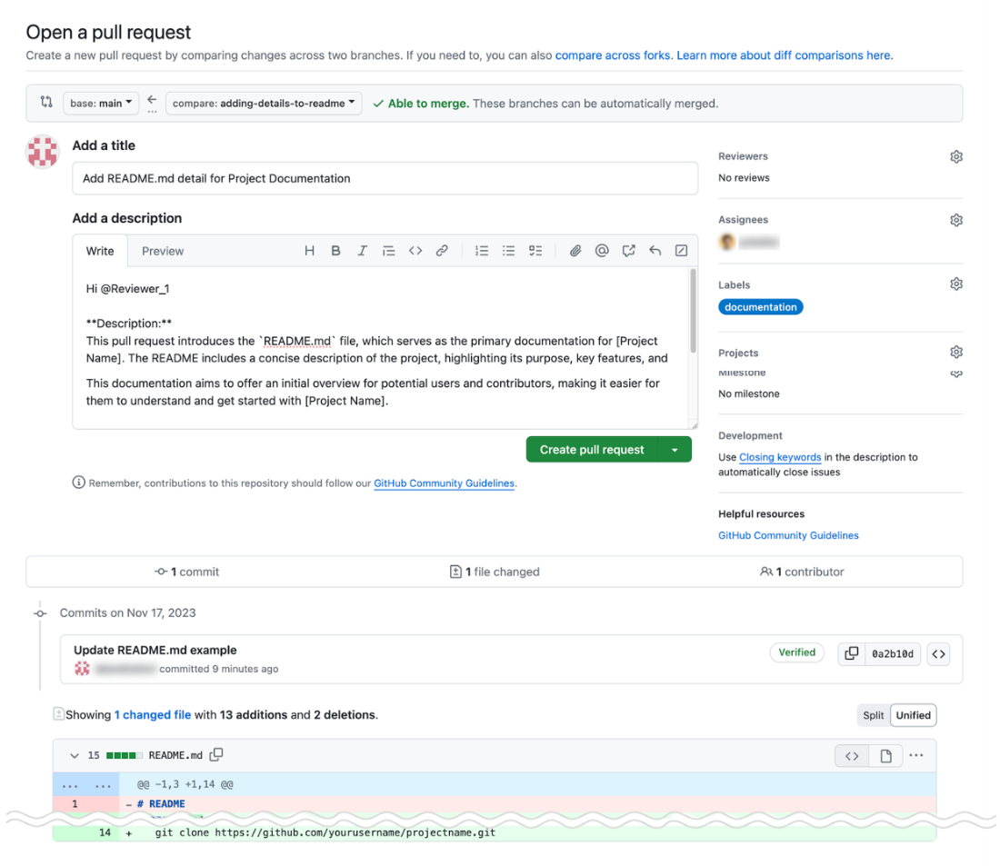
図4.39 - コミットの違いを確認できる
さて、あなたの文章力が再び試されます。ここで書くときに気をつけるべき内容は、前のセクションでIssuesについて気をつけたことと同じです。読みやすいマークダウン形式で書きましょう。しかし、この文脈では、これらのツールの明確な目的を理解することが重要です。プルリクエストの主な目的はマージされることであり、通常は承認権限のある特定の個人宛に送られます。対照的に、Issueはより広く、不特定多数に向けて発信することができます。したがって、このプルリクエストの説明を書く際には、誰がレビューするのか、どのように書くのかを考慮することが重要です。
もしレビューが特定の人によって行われるのであれば、理解や文脈が共有されているかもしれません。基本的なテクニックはイシューの場合と同じですが、対象読者に合わせてアプローチを変えることが重要です。
プルリクエストを作成する際に、2つのオプションがあることにお気づきでしょうか。直接プルリクエストを作成するか、ドラフトプルリクエストを選択することができます。
下書きプルリクエストも通常のプルリクエストも、ユーザーインターフェイスに大きな違いはありません。しかし、ドラフトプル・リクエストは、プル・リクエストがまだ確定していないこと、作業全体がまだ進行中であること、未完成であること、特定の開発段階にあることを示すために使用されます。
これは中間レビューを可能にし、まだ正式なレビューを意図していないことを示します。レビュアーは通常、中間的な結果や報告書を受け取ることを評価する。初期のレビューは、貴重な洞察を提供し、チームと進捗状況を共有することができ、有益です。
極端な例ですが、git の空コミットを使えば、コードを一行も書かずにプルリクエストを作成することができます。これは開発の初期段階から非常に有用で、チームメンバーやペアプログラミングのパートナーにコードをレビューしてもらうことで、ミスを早期に発見するのに役立ちます。したがって、プルリクエストのドラフトも活用することを強く推奨します。
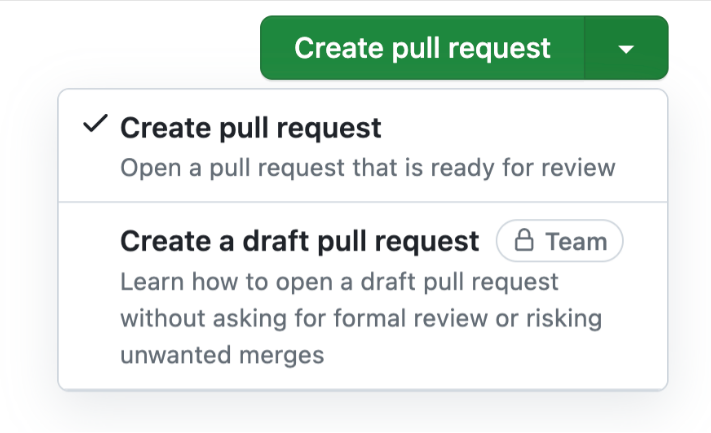
図4.40 - 別の選択肢もあります: ドラフトプル・リクエスト
さて、適切なコミュニケーションを行ってレビューが完了したら、いよいよマージです。ここでの GitHub のすばらしいところは、コマンドインターフェイスではなく UI 上でマージができることです。このままマージを進めることもできますが、その前にオプションを見てみましょう。
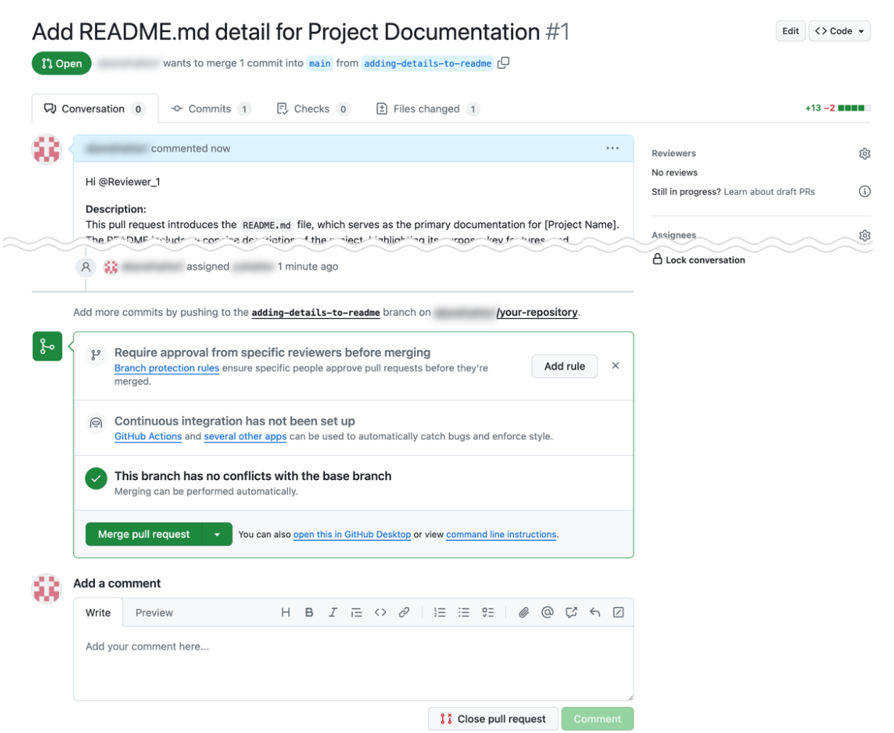
図4.41 - マージはウェブUIでできる
マージドロップダウンには3つのオプションがあります。マージコミットを作成するオプション、コミットをひとつにまとめてマージするオプション、そして最後にリベースマージを実行するオプションです。これらのマージテクニックについては前の章で説明したのでここでは詳しく説明しませんが、GitHub の素晴らしさは、Git の履歴を管理するためにこれらのオプションを柔軟に選択できることにあります。貢献の履歴を残したい場合は、まずコミットを取り込んで変更履歴をできるだけ残すようにします。一方、よりすっきりした履歴がお好みなら、squash や rebase merge といったオプションも検討しましょう。
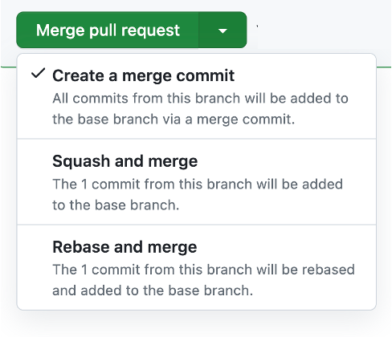
図4.42 - マージのオプション
今回はマージコミットを作成することにします。マージコミットの作成は簡単で、タイトルと説明を書くだけです。そして Confirm merge ボタンをクリックしてマージします。
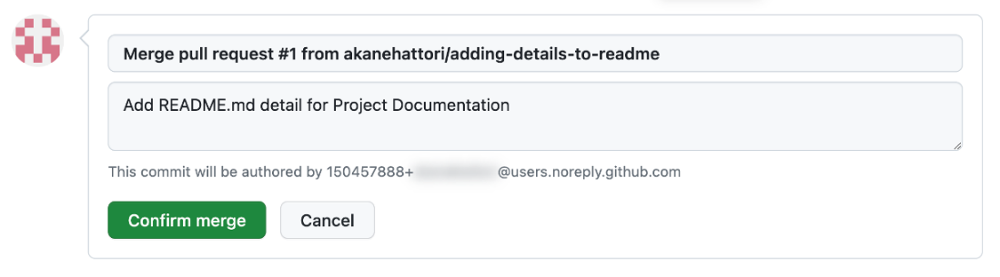
図4.43 マージコミットの作成
GitHub プラットフォームでマージが成功したことを確認します。
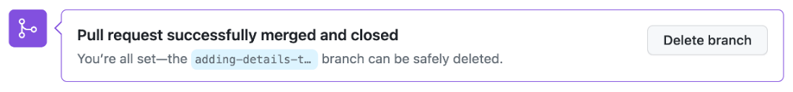
図4.44 - マージが成功したかどうか確認しよう
GitHub でのプルリクエスト管理のシンプルさを実感していただけたでしょう。このプラットフォームは、従来はコマンドラインで実行していた複雑な操作やレビューが、合理的なユーザーインターフェイスによって強化された統一プラットフォーム内で効率的に実行できることを示しています。
この先、プルリクエストを上手に管理するためのニュアンスを掘り下げていきます。DevOps中心のコミュニケーションフレームワークの中で、どのようにこれらの機能を巧みに活用し、プロジェクトや製品を成功に導くことができるかに焦点を当てます。さらに、あなたの注意と考慮が必要な重要な側面についても説明します。
何よりもまず、GitHub でのレビューのやり方を把握し、注意を払うべきベストプラクティスを探ることが重要です。GitHub を学び始めたとき、すぐに本格的なコードレビューに取り組むことはないかもしれません。しかし、レビューのやり方を理解することで、プルリクエストを書くときの期待値や内容に影響を与えることができます。
これらは徐々に改善できるプラクティスであり、最終的にはあなたのチームに最適化されるべきものであることを覚えておきましょう。
レビューの基本
GitHub のレビューインターフェイスへのアクセスは簡単です。プルリクエストのページから Files changed タブを開き、変更されたファイルの数を確認します。
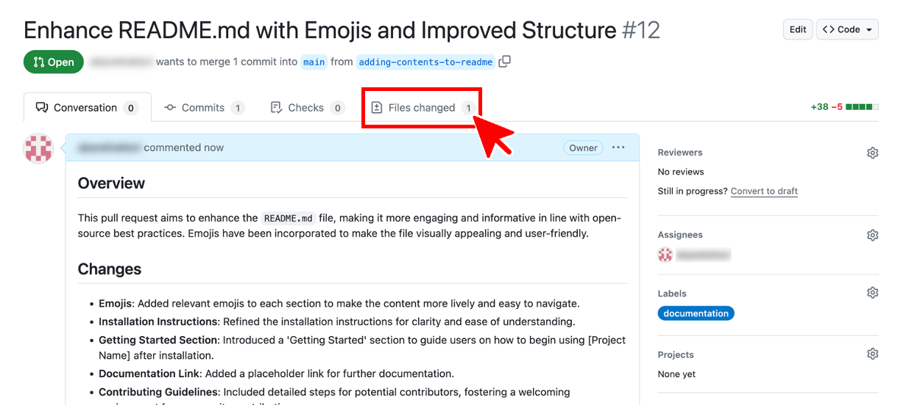
図4.45 - プルリクエストのレビュー用タブ
Files changed**タブを開いたら、内容を確認してください。下に示す行ごとの差分図に加えて、変更を並べて表示するオプションがあり、これは非常にお勧めです。行頭に-が付く行は削除を示し、+が付く行は追加を示す。
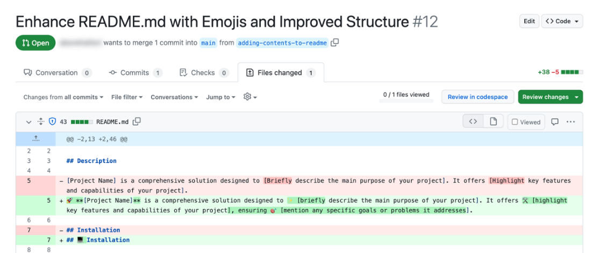
図4.46 GitHub での行ごとの差分の表示
特定の行の変更点をコメントするには、左の + ボタンを使います。複数の行を選択することもできるので、効率的に議論を始めることができます。
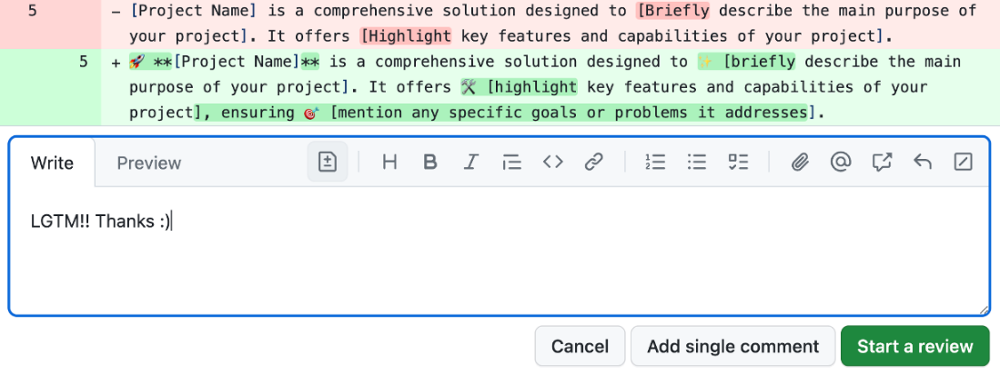
図4.47 - 変更点のレビュー
レビューの際、特定の変更を提案したい場合があります。これは、画面上の提案ボタンを押すことで行の内容をコピーすることができます。この内容をコメントで編集してください。ただし、削除された行にコメントを追加することはできますが、提案はできませんのでご注意ください。
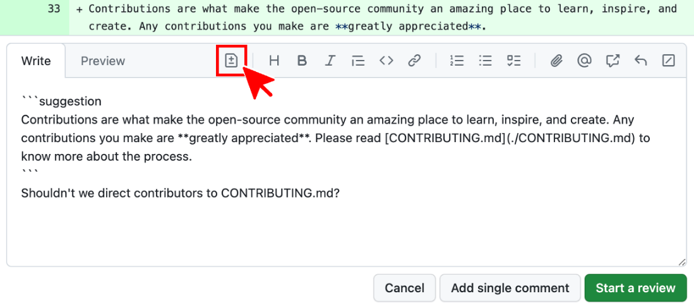
図4.48 GitHub UI の提案を使って変更を提案する
いい提案だと思ったら、Add single comment ボタンを押してコメントしましょう。複数のレビューコメントが必要な場合は、Start a review ボタンを使います。編集が多い場合に便利です。提案を含むレビューコメントは、プルリクエストスレッドとコード差分の間の両方に表示され、コードレビューをよりわかりやすくします。
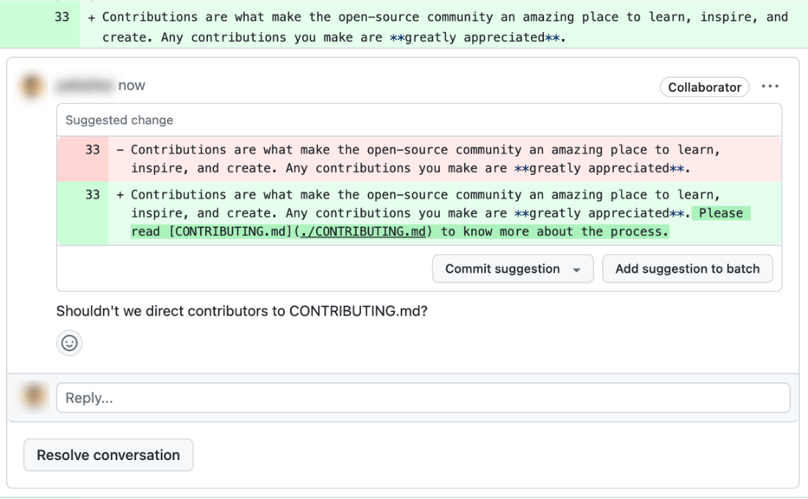
図4.49 - 提案がコメントとして表示される
レビューが完了すると、Commit suggestion と Add suggestion to batch というボタンが表示されます。GitHub の優れた点は、このような変更を CLI やエディタ経由ではなく UI から直接コミットできることです。Commit suggestion は個別の変更をコミットするもので、Add suggestion to batch は複数の変更をひとつのコミットとして記録するものです。これにより、プルリクエストに多くの変更があった場合に不要なコミットを防ぐことができます。コミット提案**ボタンを押すと、コミットメッセージと説明を入力する画面が表示され、その後変更がプルリクエストブランチにコミットされます。
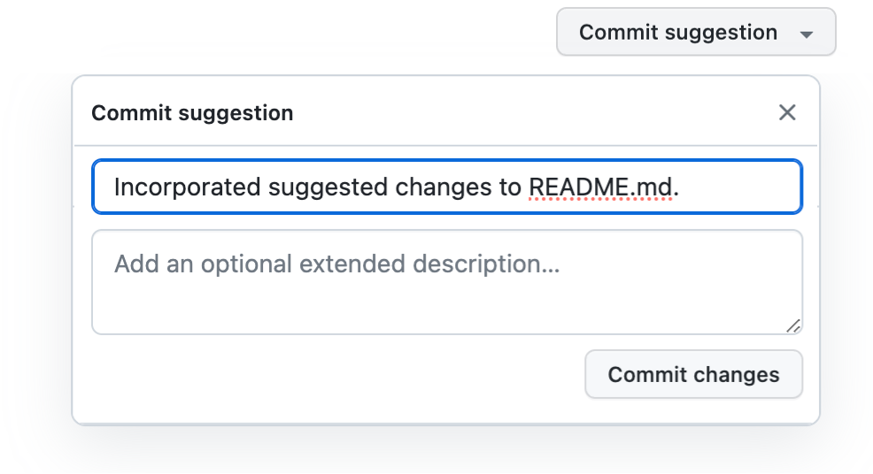
図4.50 - 変更のコミット
レビューが完了したら、いよいよレビューを行います。レビューを承認しても自動的にプルリクエストがマージされるわけではありませんが、あなたが承認したことになることに注意してください。ここでは、Commit, Approve, Request changesから選択できます。Commentオプションはコメントのみ、Approveは承認、Request changesは必要な修正を提案するために使用します。
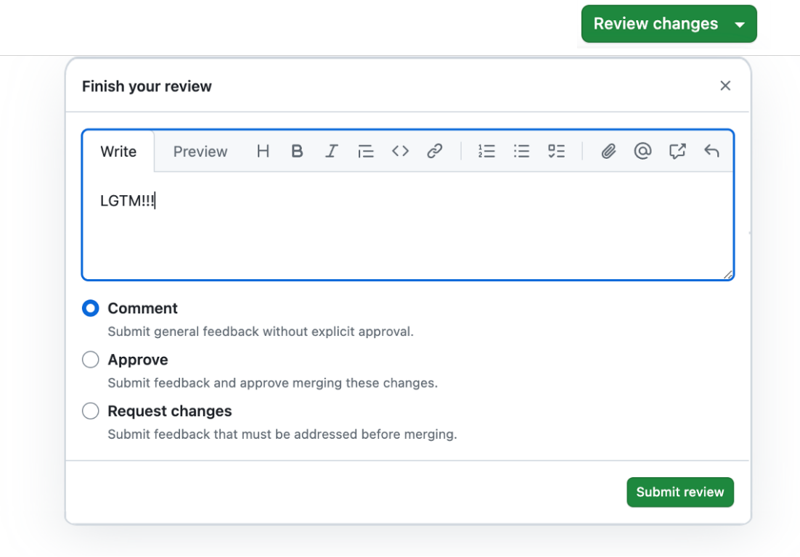
図4.51-レビューの3つのモード
承認すると、あなたのコメントと承認ステータスがこのようにスレッドに投稿されます:
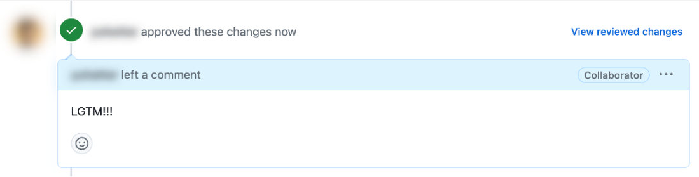
図4.52 - レビュー後のステータス
このように、GitHub は GUI を使ってレビュープロセスを単純化し、多くの機能を実現しています。コードの変更と関連するコメントのブレンドは、文脈を豊かにし、レビュアーやレビュイー、そして過去の文脈を求める現在のチームメンバーや将来のチームメンバーが情報を理解し、効果的にやりとりできるようにします。
この機能を使いこなすことで、チーム内の透明性の高いコミュニケーションを実現できる。
レビューするとき、されるときの注意点を見てみましょう。
レビューのベストプラクティス
ソフトウェア開発のダイナミックな状況において、GitHub レビューは個人の努力と集団の卓越性を結びつける極めて重要な要素となっています。このようなレビューは、単なるコードチェックにとどまらず、協調的で学習意欲の高い環境を育みます。GitHubレビューを使いこなすことは、質の高い開発プロセスを目指すチームにとって非常に重要です。
- レビュアーのマインドセットを育てる: GitHub レビューの効果は、レビューする側のマインドセットから始まります。迅速なフィードバックを重視することは、開発の勢いを維持するために重要です。しかし、スピードは、コードがチームの集合的な資産であることを認識した上で、徹底的であることとのバランスをとるべきです。この考え方は、レビューに対する建設的でエゴのないアプローチを育み、レビューを単なる作業としてではなく、現在および将来のチームメンバーにとって有意義な対話と文書化の機会として捉える。
- レビューにおけるコミュニケーションの強化: 効果的なコミュニケーションは GitHub レビューの中心です。明瞭で構造化されたフィードバックのためにMarkdownを活用することで、レビューがアクセスしやすく理解しやすいものになります。具体的で簡潔なコメントをすることで、混乱を避け、レビュープロセスを迅速化します。積極的な補強と建設的なフィードバックは、しばしば絵文字で補足され、歓迎され心理的に安全なレビュー環境を作り出し、迅速で熱心な変更の採用を促します。
- レビューにおける多様性と著者の促進: レビュープロセスにおける多様性は、さまざまな視点を導入し、レビューを豊かにし、盲点を防ぎます。開発者がフィードバックに基づいてコードを修正することを奨励することは、エンパワーメントとスキル開発を促進します。さらに、スクワッシュ・マージングのようなやり方であっても、オーサーシップを維持することは、個人のモチベーションと説明責任を維持するために極めて重要です。
- 緊急のシナリオにおける標準の維持: ホットフィックスのような緊急のシナリオであっても、レビューの質と徹底性を妥協すべきではありません。各レビューはチームの全体的な作業倫理とコード品質に貢献するため、プレッシャーの中で標準を守ることは不可欠です。
- 効率化のための自動化の統合: 自動テスト、構文チェック、リンタールールなど、自動化をレビュープロセスに組み込むことで、レビュープロセスを効率化します。これにより、人間のレビュアーはコードのより複雑な側面に集中することができます。また、レビューにテンプレートを採用することで、一貫性と徹底性を確保し、全体としてレビューの質を高く保つことができる。
結論として、GitHub でのレビューは単なるコードの品質保証の仕組みにとどまらず、チームの成長、学習、コラボレーションを促進する重要な要素なのです。これらのベストプラクティスを採用することで、チームはコードだけでなく作業環境も向上させ、相互尊重や継続的な改善、協調性を促進することができます。よく実行されたレビューは、よりまとまりのある、効率的で弾力的な開発プロセスへの一歩となる。
さて、ここまでプルリクエストsの概要、基本的な使い方、ベストプラクティスについて説明してきました。ここまでで、GitHub での共同作業のやり方はかなり理解できたのではないでしょうか。ここからは、GitHub の他の機能を見ていくことにしましょう。
GitHub の追加機能を調べることで、リポジトリ管理の経験を大きく向上させることができます。各機能を詳しく調べると膨大な量になってしまいますが、簡単に紹介することでその重要性がわかるでしょう。
GitHub Projectsは、IssueやIssueドラフト、プルリクエストを一元管理できるツールです。
GitHub Projects は、GitHub Issues や GitHub プルリクエストs だけでなく、より柔軟な管理を可能にします。GitHub Projects は、開発チームが GitHub 上で作業を整理、追跡、管理する方法を大きく進化させます。GitHub Projects は、Issues や プルリクエストs のような直線的でやや限定された範囲とは異なり、プロジェクト管理に多面的なアプローチを提供し、現代のソフトウェア開発の協調的で反復的な性質とシームレスに連携します。
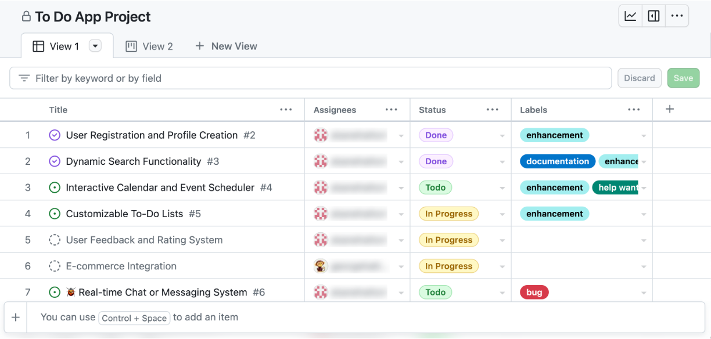
図4.53 - GitHub Projects テーブルビュー
GitHub Projects の中心には、ワークフローを視覚化するツールであるカンバンボードがあります。このボードでは、チームがワークフローのステージを反映したカスタムカラムを作成できます - To Do から In Progress や Done まで。これらのカラムにイシューやプルリクエストをドラッグ＆ドロップするだけで、ワークフローの透明性が大幅に向上し、タスクの進捗をより直感的に追跡することができます。
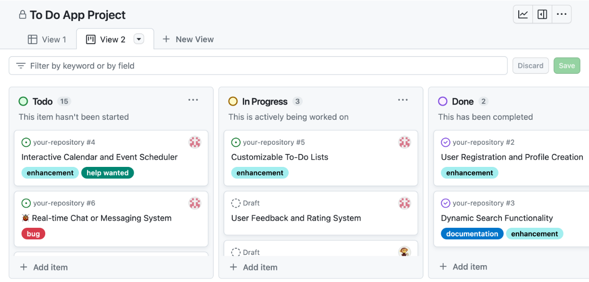
図4.54 - GitHub Projects のカンバンボードビュー
担当者やマイルストーンなどのツールによって、コラボレーションはさらに強化されます。マイルストーンは、重要な目標や期限に向けた進捗を追跡するのに役立ちます。このような構造化されたコラボレーションアプローチにより、チームメンバー全員がプロジェクトゴールと足並みをそろえ、その達成における自分の役割を理解することができます。
統合されたプロジェクトレポートもGitHub Projectsの特徴です。プロジェクトの進捗状況を包括的に把握することができます。DevOpeのメトリクスは、チームのパフォーマンスを評価し、改善点を特定する上で非常に貴重です。このデータ駆動型のプロジェクト管理アプローチにより、チームは十分な情報に基づいた意思決定を行い、ワークフローを最適化することができます。
図4.55 - GitHub Projects ステータスチャート
GitHub Projects では、バグのトリアージや自動カンバンのような一般的なプロジェクトの定義済みテンプレートから、特定のチームのワークフローに合わせたカスタムテンプレートの作成機能まで、さまざまなプロジェクトテンプレートを提供しています。これらのテンプレートは時間を節約し、チームが信頼できる一貫した構造を提供します。
さらに、プロジェクトボードにイシューフィルタとプルリクエストフィルタを含めることで、タスクを効率的に管理できるようになります。チームは、ラベルや担当者、マイルストーンなどでフィルターをかけることができ、最も重要なタスクを素早く見つけて集中することができます。
GitHub Projects の最も大きな利点の一つは、複数のリポジトリのイシューやPRを一つのプロジェクトで管理できることです。この機能は、複数のリポジトリにまたがるような大規模なプロジェクトでは特に有益で、全体的な視点とまとまりのある管理体験を提供します。
GitHub Projects は、従来のイシュー追跡やプルリクエスト管理の枠を超え、プロジェクト管理のための包括的で柔軟性の高い、高度にコラボレーティブなプラットフォームを提供します。GitHub Projectsの機能を使うことで、開発チームは生産性を高め、コラボレーションを改善し、プロジェクトを成功に導くことができます。GitHub Projects は、コラボレーション、効率性、透明性を優先する DevOps カルチャーの原則に合致しているため、現代のソフトウェア開発環境において優れたツールとなっています。
GitHub Codespacesは、完全に設定可能なクラウドベースの開発環境をGitHub内で直接提供することで、開発者の作業方法に革命をもたらします。GitHub Codespacesは、開発ワークフローの進化に大きな一歩を踏み出し、チームのコラボレーションとDevOpsプラクティスの合理化を容易にします。GitHub Codespacesは、完全に設定可能なクラウドベースの開発環境をGitHub内に直接提供することで、開発者の作業方法に革命をもたらします。これは、開発ワークフローの進化における重要な一歩であり、チームのコラボレーションを容易にし、DevOpsの実践を合理化します。ブラウザ上のVisual Studio Codeとして、GitHub CodespacesはVS Codeで利用可能な機能と拡張機能を提供します。この親しみやすさは非常に大きな利点で、開発者は強力で人気のある開発ツールを、クラウドへのアクセスや統合という付加的な利点とともに活用することができます。
図4.56 GitHub コードスペース
新しいコードスペースを始めるのは簡単です。数回クリックするだけで開発環境を立ち上げることができ、リポジトリの .devcontainer 設定で指定した設定やツールが自動的に適用されます。これは、DevOps の基本的な側面であり、再現性を重視し、「私のマシンでは動作する」という問題を減らすものです。GitHub Codespacesの最も大きな利点の一つは、重いファイルをクローンしたり、複雑な開発環境をローカルにセットアップする必要がなくなることです。これは、新しいエンジニアのオンボーディング時間を大幅に節約するだけでなく、それぞれ独自の環境要件を持つ異なるプロジェクト間の切り替えプロセスを簡素化します。開発環境をクラウドでホスティングすることで、Codespacesはローカルの開発セットアップを管理するオーバーヘッドを大幅に削減します。
パフォーマンスとカスタマイズは、GitHub Codespacesの重要な側面です。開発者はコードスペースのハードウェア仕様を選択でき、タスクに必要なリソースを確保できる。カスタマイズは開発環境そのものにも及び、Visual Studio Codeの拡張機能やパーソナライズされたエディタ設定もサポートされ、開発者のエクスペリエンスに焦点を当てたDevOpsを強化している。
GitHub Codespacesは単なる開発環境ではなく、DevOpsの実践を強化するための触媒です。柔軟でコラボレーティブな統合プラットフォームを提供することで、GitHubエコシステム内で、より迅速なイノベーション、より効率的なコラボレーション、より高品質なソフトウェアの提供を可能にします。そのため、GitHub Codespacesは、現代のソフトウェア開発とDevOpsの現場において欠かすことのできないツールとなっています。
GitHub Discussionsは、GitHubリポジトリ内のコミュニティを構築し、育成するための重要なプラットフォームとして機能します。これは、開発者、貢献者、ユーザーの交流とコラボレーションの方法を大きく前進させるものです。この機能は、従来のイシューやプルリクエストのコミュニケーションにとどまらず、質問やアイデア、ディスカッションのための専用スペースを提供します。GitHub Discussions は、コード投稿に直接関わっていない人も含め、より幅広いコミュニティが参加し、洞察を共有し、フィードバックを提供できる環境を作ります。
図4.57 - 活発な GitHub ディスカッションスレッド
GitHub ディスカッションの重要な点は、コミュニケーションを効果的に整理できることです。ディスカッションは、Q&A やアナウンス、一般的な議論などさまざまな種類に分類することができます。この分類は、ユーザーが関連する会話を見つけやすくし、有意義な貢献をしやすくするため、明確さと集中力の維持に役立ちます。
図4.58 - GitHub ディスカッションのカテゴリーは柔軟性がある
GitHub ディスカッションは、知識の共有や保存においても重要な役割を果たします。チャットルームのような一過性のコミュニケーションチャネルとは異なり、ディスカッションは永続的で検索可能です。このアーカイブ品質により、ディスカッションで共有された知識は、会話が行われた後もずっとコミュニティに利益をもたらし続けます。
まとめると、GitHub ディスカッションはコミュニティの参加とコラボレーションを促進する強力なツールであるだけでなく、GitHub Issues の整理と明瞭性を維持する上でも重要な役割を果たしています。プロジェクトが成長し進化するにつれて、Issues の量と多様性に圧倒され、乱雑さや混乱を招くことがあります。GitHub Discussionsはコミュニケーションの触媒として機能し、チームが様々なトピックや会話をより構造化された適切なスペースに流すことを可能にします。
GitHub Discussionsのこの機能は、一般的なGitHub Issuesに含まれるような、より具体的で技術的な会話と、広く一般的な議論を分離することができ、非常に貴重です。これは、Issues セクションを集中して管理しやすくし、ノイズを減らして、チームが特定のコード関連タスクを追跡して対処しやすくするのに役立ちます。
さらに、GitHub Discussionsは幅広いディスカッションのための専用プラットフォームを提供することで、様々な形でコラボレーションへの道をスムーズにします。貴重な洞察やアイデアが共有され、保存されることを保証するだけでなく、技術的な議論が Issues セクションで希釈されることも防ぎます。一般的なディスカッションと特定のイシューを区別することは、効率的なワークフローを維持し、合理的なプロセスと明確なコミュニケーションを重視する DevOps のプラクティスに合わせるために不可欠です。
そのため、GitHub Discussions は GitHub のエコシステムに追加されただけのものではなく、プラットフォーム上のプロジェクト管理の全体的な機能と有効性を高める不可欠な要素なのです。GitHub Discussionsは、GitHub Issueをクリーンで集中的なものに保つと同時に、より広範なコミュニティ主導の会話のための堅牢な環境を提供することで、コラボレーションを円滑にし、プロジェクトを成功へと導きます。
GitHub リポジトリには、コラボレーションを促進する設定がたくさんあります。これらの設定は、失敗を恐れる必要性を減らし、レビュープロセスをより標準化することができます。ここではそのすべてを取り上げるわけではありませんが、特に重要なものをいくつか紹介します。
ブランチルールは、セキュリティとコラボレーションのバランスをとった方法でリポジトリを管理するために重要です。GitHub では、リポジトリや特定の機能に対するパーミッションを設定することはできますが、コードベースのパーミッションは提供されていません。書き込み権限だけに頼っていると、参加が制限されたりオープンなコミュニケーションが妨げられたりする可能性があります。ブランチルールによって、リポジトリ管理者はブランチ、特にmainブランチやmasterブランチのような重要なブランチに特定のポリシーを適用することができます。これらのポリシーには、プルリクエストのレビューやステータスのチェック、ブランチにプッシュできる人の制限などが含まれます。これらのルールを設定することで、チームは重要なブランチにマージされるコードがあらかじめ決められた品質基準を満たし、そのプロセスがチームのワークフローに沿ったものであることを確認できます。
ルールセットでは、さまざまな設定が可能です。特定のブランチだけに適用したり、管理者に権限を与えてバイパスさせることもできる。
図4.59 - GitHub でのブランチルールの設定
ブランチルールの主な利点のひとつは、コードレビューの強制です。プルリクエストをマージする前に一定数の承認を得ることを義務づけることで、チームはすべての変更を精査し検証することができます。このピアレビュープロセスは、コードの品質を向上させるだけでなく、チームメンバー間の知識の共有とコラボレーションを促進します。
図4.60 - ブランチルールにおけるコードレビューの要件
ステータスチェックは、ブランチルールのもうひとつの重要な部分です。これらのチェックには、自動テスト、コード・リンターの結果、またはコードの品質と機能を検証する他のタイプの自動化プロセスを含めることができます。マージする前にこれらのチェックに合格することを要求することで、チームはバグや問題がメインのコードベースに入り込むのを防ぐことができる。
図4.61 - ブランチルールでのステータスチェック
ブランチルールは、コードの品質を守りワークフローの規律を守るための GitHub の基本的な設定です。ブランチルールを使うことで、チームは開発プロセスの重要な部分を自動化したり強制したりできるようになり、DevOps の原則に沿うようになります。ブランチルールを活用することで、チームはコードベースの安定性、安全性、一貫性を確保することができます。このため、ブランチルールは最新のソフトウェア開発に不可欠な要素であり、DevOpsツールキットの貴重な資産となっている。
GitHub の CODEOWNERS ファイルは、プルリクエストにレビュワーを自動的に割り当てたり、特定のコード領域の所有権を明確にしたりするための、シンプルで強力なツールです。このファイルは、リポジトリのルート、docs/、または .github/ ディレクトリに置かれ、個人またはチームをファイルパターンと一緒にリストアップします。これらのパターンに一致するファイルに変更が加えられると、指定されたコード所有者にレビューが要求されます。
図5.62 - CODEOWNERSファイルの例
CODEOWNERSファイルを使用する利点は次のとおりです:
- 自動レビュアー割り当て: 適切なレビュアーを自動的に割り当てることで、プルリクエストのプロセスを合理化し、変更が適切な専門家によってチェックされるようにします。
- 明確な所有権: コードベースの特定の部分の責任者を明確にし、迅速な意思決定と効率的なメンテナンスを支援します。
CODEOWNERSのこの側面は、デプロイの安全性に直接関係するため、特に重要です。継続的インテグレーションと継続的デプロイメント（CI/CD）が規範となっている環境では、十分にレビューされ承認されたコードのみがデプロイされることを保証することが重要である。これは、デプロイプロセスにセキュリティと効率性のレイヤーを追加し、効果的なDevOpsプラクティスの中心となる予防的かつ積極的な原則を具体化する。
GitHub のテンプレートは、コラボレーションを強化し、プロジェクト管理のさまざまな側面で一貫性を維持します。
図4.63 - イシューテンプレートメニュー
イシューテンプレートは、詳細で構造化されたイシューレポートを作成する際のガイドとなります。さまざまな種類のイシュー（バグ報告、機能リクエストなど）に対して特定のテンプレートを提供することで、必要な情報がすべて含まれるようになり、理解が容易になり、解決が早くなります。
図5.64 - イシューテンプレートの例
プルリクエストのテンプレートは、すべてのプルリクエストがプロジェクトの標準や要件に準拠していることを保証します。これらのテンプレートには通常、チェックリスト、変更内容を記述するセクション、関連するissueを参照するセクション、その他の注記が含まれています。この標準化により、レビュープロセスが簡素化され、コントリビューションの品質が向上します。
これらのコンポーネントはそれぞれ、よく整理され、アクセスしやすく、貢献者に優しい GitHub リポジトリを形成する上で重要な役割を果たしています。これらの標準的な基本文書やテンプレートを実装することで、DevOps やオープンソース文化のベストプラクティスと共鳴しながら、コラボレーションやプロジェクト管理のための強固な基盤を築くことができます。